第 1 页Page 1PDF p.1
Soyong Shin1 Juyong Kim1 Eni Halilaj1 Michael J. Black2 1Carnegie Mellon University 2Max Planck Institute for Intelligent System
核对原版排版
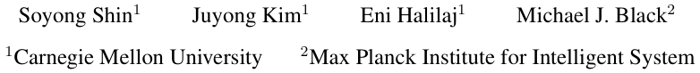
Soyong Shin1 Juyong Kim1 Eni Halilaj1 Michael J. Black2 1Carnegie Mellon University 2Max Planck Institute for Intelligent System
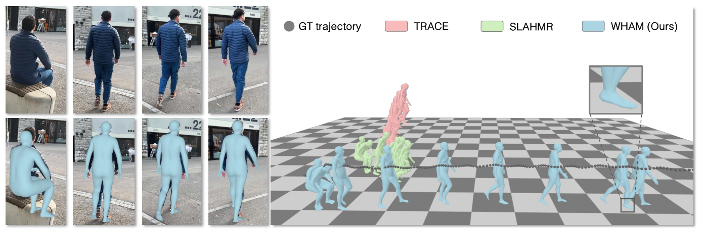
Figure 1. WHAM: World-grounded Humans with Accurate Motion. State-of-the-art methods like TRACE [45] and SLAHMR [55] fail to capture global 3D human trajectories accurately when given in-the-wild videos captured using a moving camera, producing implausible world-grounded motion (e.g., foot sliding). To address this, WHAM uses two novel strategies: (1) feature integration from 2D keypoints and pixels to reconstruct precise and pixel-aligned 3D human motion and (2) contact-aware trajectory recovery to place the human in a global coordinate system without foot sliding. Gray dots show the ground-truth global trajectory. See Supplemental Video.
核对原版排版
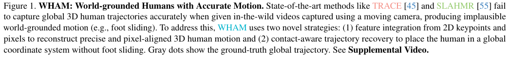
图 1. WHAM: World-grounded Humans with Accurate Motion。在面对使用移动相机拍摄的真实场景（in-the-wild）视频时，像 TRACE [45] 和 SLAHMR [55] 这样的前沿方法无法准确捕捉全局 3D 人体轨迹，从而产生不切实际的基于世界坐标的运动（例如脚部滑动）。为解决这一问题，WHAM 采用了两种新颖策略：(1) 融合来自 2D 关键点和像素的特征，以重建精确且与像素对齐的 3D 人体运动；(2) 结合接触感知的轨迹恢复，将人体置于全局坐标系中且无脚部滑动。灰色圆点表示真实的全局轨迹（ground-truth global trajectory）。参见补充视频。
Abstract
核对原版排版
摘要
The estimation of 3D human motion from video has progressed rapidly but current methods still have several key limitations. First, most methods estimate the human in camera coordinates. Second, prior work on estimating humans in global coordinates often assumes a flat ground plane and produces foot sliding. Third, the most accurate methods rely on computationally expensive optimization pipelines, limiting their use to offline applications. Finally, existing videobased methods are surprisingly less accurate than singleframe methods. We address these limitations with WHAM (World-grounded Humans with Accurate Motion), which accurately and efficiently reconstructs 3D human motion in a global coordinate system from video. WHAM learns to lift 2D keypoint sequences to 3D using motion capture data and fuses this with video features, integrating motion context and visual information. WHAM exploits camera angular velocity estimated from a SLAM method together with human motion to estimate the body’s global trajectory. We combine this with a contact-aware trajectory refinement method that lets WHAM capture human motion in diverse conditions, such as climbing stairs. WHAM outperforms all existing 3D human motion recovery methods across multiple in-the-
核对原版排版
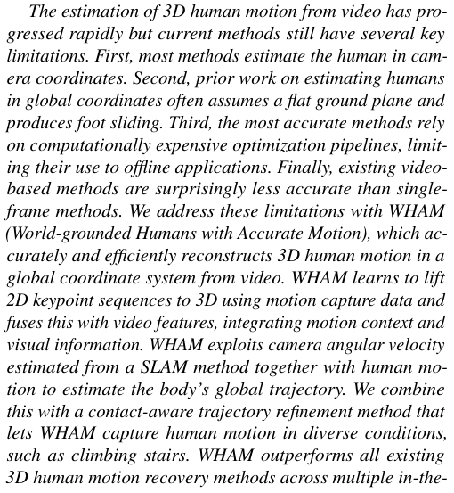
从视频中估计 3D 人体运动发展迅速，但现有方法仍存在若干关键局限。首先，大多数方法是在相机坐标系下估计人体。其次，以往在全局坐标系中估计人体的工作通常假设地面平坦，并会导致脚部滑动。第三，最精确的方法依赖于计算成本高昂的优化流程，限制了其在离线场景中的应用。最后，现有的基于视频的方法精度反而出人意料地低于单帧方法。我们通过 WHAM（World-grounded Humans with Accurate Motion）解决了这些局限，该方法能够从视频中准确且高效地重建全局坐标系下的 3D 人体运动。WHAM 利用动作捕捉数据学习将 2D 关键点序列提升至 3D，并将其与视频特征融合，从而整合了运动上下文与视觉信息。WHAM 利用从 SLAM 方法估计出的相机角速度以及人体运动来估计身体的全局轨迹。我们将此与一种接触感知的轨迹细化方法相结合，使 WHAM 能够在攀爬楼梯等多种复杂条件下捕捉人体运动。WHAM 在多个真实场景（in-the-
wild benchmarks. Code is available for research purposes at http://wham.is.tue.mpg.de/.
核对原版排版
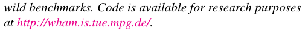
wild）基准测试上超越了所有现有的 3D 人体运动恢复方法。用于研究目的的代码可在 http://wham.is.tue.mpg.de/ 获取。
1. Introduction
核对原版排版
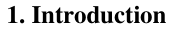
1. 引言
Our goal is to accurately estimate the 3D pose and shape of a person from monocular video. This is a longstanding problem and, while the field has made rapid progress, several key challenges remain. First, human motion should be computed in a consistent global coordinate system. Second, the method should be computationally efficient. Third, the results should be accurate, temporally smooth, detailed, natural looking, and have realistic foot-ground contact. Fourth, the capture should work with an arbitrary moving camera. These constraints need to be satisfied to make markerless human motion capture widely available for applications in gaming, AR/VR, autonomous driving, sports analysis, and human-robot interaction. We address these challenges with WHAM (World-grounded Humans with Accurate Motion) , which enables fast and accurate recovery of 3D human motion from a moving camera; see Fig. 1.
核对原版排版
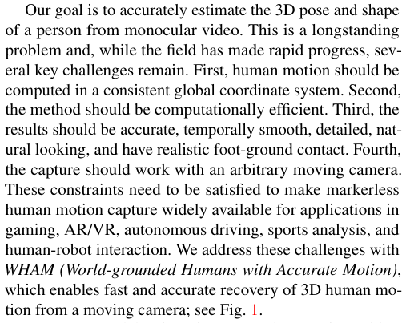
我们的目标是从单目视频中准确估计人体的 3D 姿态与体型。这是一个长期存在的难题；尽管该领域已取得快速进展，但仍存在若干关键挑战。首先，人体运动应当在一个一致的全局坐标系中计算。其次，该方法在计算上应当高效。第三，结果应当准确、时序平滑、细节丰富、外观自然，并具有逼真的足-地接触。第四，动作捕捉应适用于任意移动的相机。只有满足这些约束条件，才能使无标记人体动作捕捉广泛应用于游戏、AR/VR、自动驾驶、体育分析以及人机交互。我们通过 WHAM（World-grounded Humans with Accurate Motion）应对这些挑战，该方法能够从移动相机中快速且准确地恢复 3D 人体运动；参见图 1。
It seems natural that, in estimating 3D humans from video, we should be able to exploit the temporal nature of video. Counter-intuitively, existing video-based methods for 3D
核对原版排版
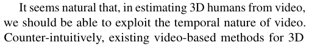
在从视频中估计 3D 人体时，我们理应能够利用视频的时序特性。然而反直觉的是，现有的用于 3D
展开第 1 页原版整页（含全部图表、公式与页眉页脚）
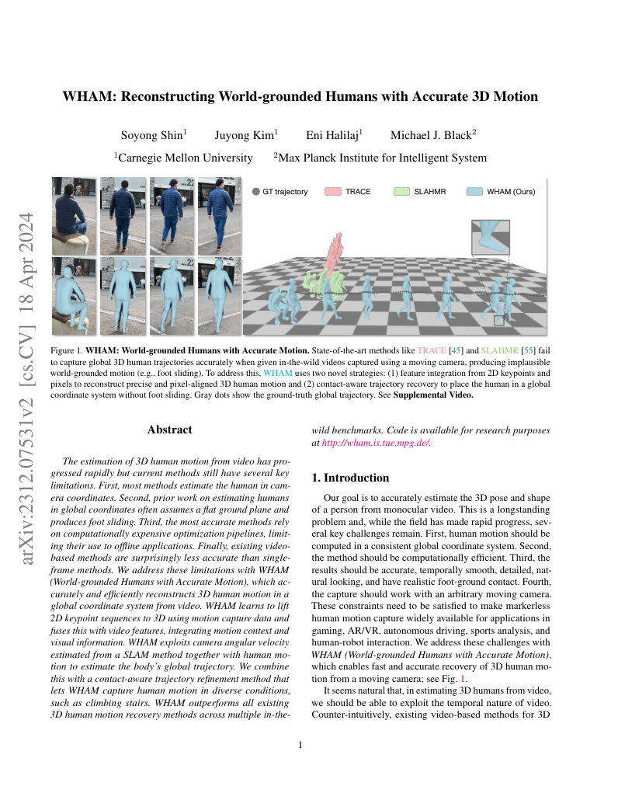
第 2 页Page 2PDF p.2
human pose and shape (HPS) estimation [6, 15, 17, 30, 43, 52] are less accurate than the best single-frame methods [7, 14, 18, 21, 23, 25, 26, 60, 60]. This may be an issue of training data. There are large datasets of single images with ground-truth 3D human poses containing a diversity of body shapes, poses, backgrounds, lighting, etc. In contrast, video datasets with ground truth are much more limited.
核对原版排版
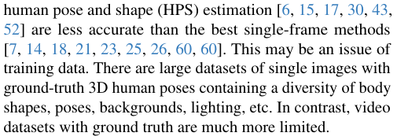
人体姿态与体型（HPS）估计的基于视频的方法 [6, 15, 17, 30, 43, 52]，其精度反而低于最佳的单帧方法 [7, 14, 18, 21, 23, 25, 26, 60, 60]。这可能是训练数据的问题。包含真实 3D 人体姿态真值的单张图像数据集规模庞大，涵盖了体型、姿态、背景、光照等丰富的多样性；相比之下，具有真值的视频数据集则要有限得多。
To address this, WHAM leverages both the large-scale AMASS motion capture (mocap) dataset [32] and video datasets. Our key idea is to learn about 3D human motion from AMASS and then learn to fuse this information with temporal image cues from video, getting the best of both. Similar to previous work [61, 62], we use AMASS to generate synthetic 2D keypoints and ground-truth motion sequence pairs, from which we pretrain a motion encoder, which captures the motion context , and decoder that lifts sequences of 2D keypoints to sequences of 3D poses. Given the robustness of recent 2D keypoint detection models [54, 59], our pretrained model does a good job of predicting human pose from video.
核对原版排版
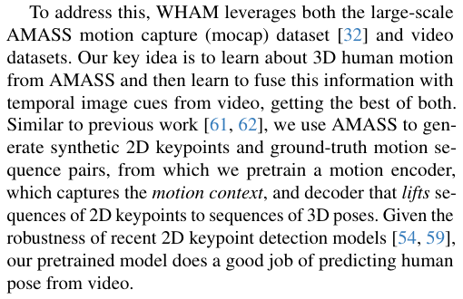
为了解决这一问题，WHAM 同时利用了大规模 AMASS 动作捕捉（mocap）数据集 [32] 和视频数据集。我们的核心思想是从 AMASS 中学习 3D 人体运动，然后学习将该信息与来自视频的时序图像线索相融合，从而兼取两者的优势。与先前的研究 [61, 62] 类似，我们使用 AMASS 生成合成 2D 关键点与真实运动序列的配对数据，并据此预训练一个用于捕获运动上下文的运动编码器，以及一个将 2D 关键点序列提升至 3D 姿态序列的解码器。得益于近期 2D 关键点检测模型 [54, 59] 的鲁棒性，我们的预训练模型在从视频预测人体姿态方面表现优异。
Keypoints alone, however, are too sparse for accurate 3D mesh estimation. To improve accuracy, we jointly train a feature integrator network that merges information from video and 2D-keypoint sequences. We use a pretrained image encoder from previous work [1, 7, 21, 25] and train the feature integrator using video datasets [11, 15, 33, 49]. This integration process supplements the motion context extracted from the sparse 2D keypoints with dense visual context, significantly improving the recovered pose and shape accuracy.
核对原版排版
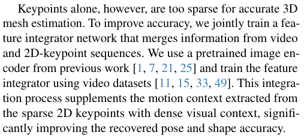
然而，仅凭关键点对于精确的 3D 网格估计而言过于稀疏。为了提高精度，我们联合训练了一个特征整合器网络，将来自视频和 2D 关键点序列的信息进行融合。我们采用了先前工作 [1, 7, 21, 25] 中的预训练图像编码器，并使用视频数据集 [11, 15, 33, 49] 来训练该特征整合器。这一整合过程利用稠密的视觉上下文补充了从稀疏 2D 关键点中提取的运动上下文，从而显著提高了恢复出的姿态与体型精度。
While the above approach produces accurate motion, we want this motion in global coordinates, unlike most previous methods that compute the body in camera coordinates. Estimating the global human trajectory is challenging when the camera is moving because the motions of the body and the camera are entangled. Recent work addresses this with optimization fitting based on a learned human motion prior and camera information from SLAM methods [20, 41, 55] or dense 3D scene information from COLMAP [28]. However, these methods are computationally expensive and far from real time. Recent regression-based methods are faster but either constrain the problem with static or known camera conditions [42, 61] or have temporal jitter and limited accuracy [45]. We tackle this challenge with two additional modules. First, we predict the global orientation and root velocity of the human from the sequence of 2D keypoints by training a global trajectory decoder . Specifically, we concatenate the camera’s angular velocity to the context and train the global trajectory decoder to recursively predict the current orientation and root velocity, effectively factoring camera motion from human motion. WHAM takes the camera’s angular velocity either from the output of a SLAM method or from a camera’s gyroscope when available.
核对原版排版
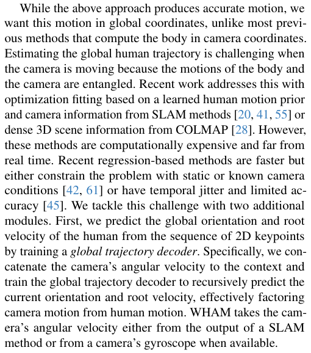
尽管上述方法能够生成精确的运动，但与以往大多数在相机坐标系下计算身体的方法不同，我们希望该运动位于全局坐标系中。当相机处于移动状态时，估计人体全局轨迹极具挑战性，因为身体和相机的运动相互交织。近期的工作通过基于学习到的人体运动先验以及来自 SLAM 方法的相机信息 [20, 41, 55] 或来自 COLMAP [28] 的稠密 3D 场景信息进行优化拟合来解决这一问题。然而，这些方法计算成本高昂，远非实时。近期基于回归的方法速度更快，但要么将问题限制在静态或已知的相机条件下 [42, 61]，要么存在时序抖动且精度有限 [45]。我们通过两个额外模块来应对这一挑战。首先，我们通过训练一个全局轨迹解码器，从 2D 关键点序列中预测人体的全局朝向和根节点速度。具体而言，我们将相机的角速度与上下文拼接，并训练全局轨迹解码器递归预测当前的朝向和根节点速度，从而有效地将相机运动从人体运动中分解出来。WHAM 可以从 SLAM 方法的输出中获取相机角速度，或者在可用时直接从相机的陀螺仪中获取。
The above solution relies on knowledge of human motion
核对原版排版
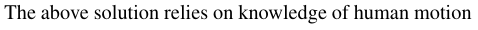
上述解决方案依赖于从
learned from AMASS. Therefore, it can fail to capture elevation changes when the surface is not flat, e.g. when ascending the stairs because AMASS has a limited amount of such data. To address this, we introduce foot contact as an additional explicit form of motion context. We train WHAM to predict the likelihood of foot-ground contact using estimated contact labels from both AMASS and 3D video datasets. We then train a trajectory refinement network that outputs an update to the root orientation and velocity based on the information about the foot contact/velocity. This refinement enables WHAM to accurately estimate human motion in a global coordinate system even when the terrain is not flat.
核对原版排版
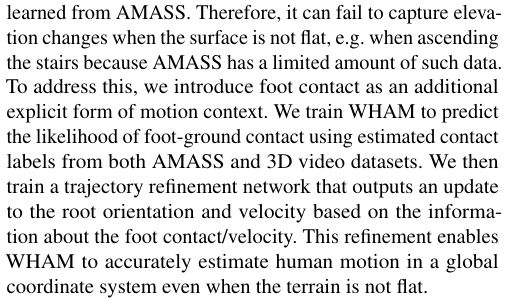
AMASS 中学到的人体运动知识。因此，当表面不平坦时（例如爬楼梯，因为 AMASS 中此类数据有限），该方法可能无法捕获高度变化。为解决这一问题，我们引入了足部接触作为一种额外的显式运动上下文形式。我们利用来自 AMASS 和 3D 视频数据集的估计接触标签来训练 WHAM，以预测足-地接触的概率。随后，我们训练了一个轨迹优化网络，该网络根据足部接触/速度信息输出对根节点朝向和速度的更新量。这种细化使得 WHAM 即使在地形非平坦的情况下，也能在全局坐标系中准确估计人体运动。
WHAM has very low computational overhead because it is an on-line algorithm that recursively predicts the pose, shape, and global motion parameters. The network, excluding preprocessing (bounding box detection, keypoint detection, and person identification), runs at 200 fps, significantly faster than prior methods. Also, despite not using global optimization like [55], we obtain accurate 3D camera trajectories and global body motions with minimal drift. Through extensive comparisons on multiple in-the-wild datasets as well as detailed ablation studies, we find that WHAM achieves stateof-the-art (SOTA) accuracy on 3D human pose estimation as well as global trajectory estimation (see Fig. 1).
核对原版排版
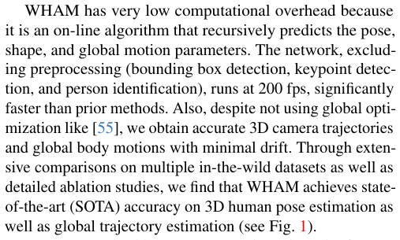
WHAM 的计算开销极低，因为它是一种在线算法，可以递归预测姿态、体型和全局运动参数。该网络在不包括预处理（边界框检测、关键点检测和人物身份识别）的情况下运行速度可达 200 fps，显著快于先前的方法。此外，尽管没有使用像 [55] 那样的全局优化，我们仍获得了精确的 3D 相机轨迹和漂移极小的全局人体运动。通过在多个真实场景数据集上的广泛对比以及详细的消融实验，我们发现 WHAM 在 3D 人体姿态估计以及全局轨迹估计上均取得了最前沿（SOTA）的精度（参见图 1）。
In summary, in this paper we: (1) introduce the first approach to effectively fuse 3D human motion context and video context for 3D HPS regression; (2) propose a novel global trajectory estimation framework that leverages motion context and foot contact to effectively address foot sliding and enable the 3D tracking of people on non-planar surfaces; (3) efficiently perform HPS regression in global coordinates; (4) achieve state-of-the-art (SOTA) performance on multiple in-the-wild benchmark datasets (3DPW [49], RICH [10], EMDB [16]). WHAM is the first video-based method to outperform all image-based and video-based methods on per-frame accuracy while maintaining temporal smoothness.
核对原版排版
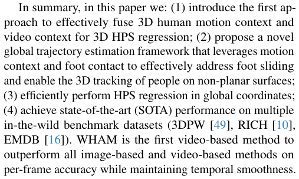
综上所述，本文的主要贡献如下：(1) 首次提出了将 3D 人体运动上下文与视频上下文有效融合以进行 3D HPS 回归的方法；(2) 提出了一个新颖的全局轨迹估计框架，利用运动上下文和足部接触有效解决脚滑动问题，并实现在非平面表面上对人体的 3D 追踪；(3) 在全局坐标系下高效执行 HPS 回归；(4) 在多个真实场景基准数据集（3DPW [49]、RICH [10]、EMDB [16]）上取得了最前沿（SOTA）的性能。WHAM 是首个在保持时序平滑性的同时，在逐帧精度上超越所有基于图像和基于视频的方法的视频基方法。
2. Related Work
核对原版排版
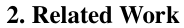
2. 相关工作
Image-based 3D HPS Estimation. There are two broad classes of methods for recovering 3D HPS from images: model-free [22, 27, 34] and model-based [7, 12–14, 21, 25, 35, 36]. Here we focus on model-based methods, which estimate the low-dimensional parameters of a statistical body model [29, 37, 38, 53]. While early work explores optimization-based methods [2], here we focus on direct regression methods based on deep learning.
核对原版排版
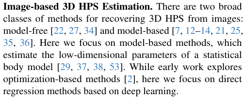
基于图像的 3D HPS 估计。从图像中恢复 3D HPS 主要有两大类方法：无模型（model-free）方法 [22, 27, 34] 和基于模型（model-based）的方法 [7, 12–14, 21, 25, 35, 36]。在此我们侧重于基于模型的方法，这类方法估计统计人体模型 [29, 37, 38, 53] 的低维参数。早期研究探索了基于优化的方法 [2]，而在此我们重点关注基于深度学习的直接回归方法。
Many existing methods follow the architecture of HMR [14], which uses a pretrained backbone to predict image features followed by a multilayer perceptron (MLP) that regresses SMPL [29] pose parameters from image features. Training such networks typically leverages paired images with SMPL parameters; these parameters are often pseudo-groundtruth (p-GT), estimated from 2D keypoints
核对原版排版
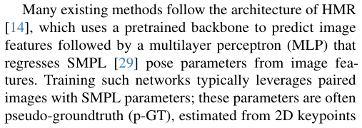
许多现有方法遵循 HMR [14] 的架构，即使用预训练的骨干网络预测图像特征，随后通过多层感知机（MLP）从图像特征中回归 SMPL [29] 姿态参数。训练此类网络通常利用带有 SMPL 参数配对的图像数据；这些参数通常是通过 2D 关键点估计出的伪真值（p-GT）
展开第 2 页原版整页（含全部图表、公式与页眉页脚）
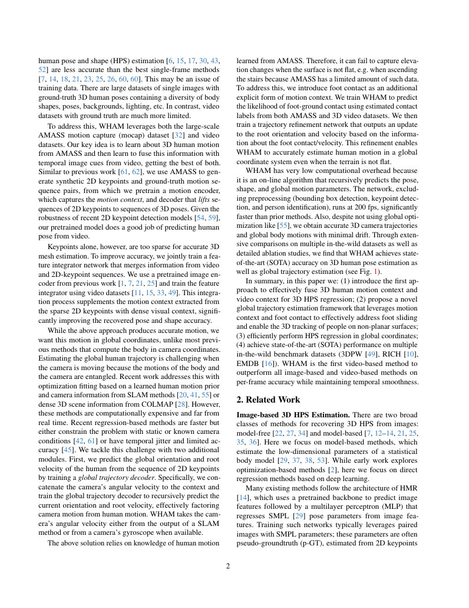
第 3 页Page 3PDF p.3
[12, 21, 25, 35, 36]. Other architectures for HPS regression have also been proposed [7, 18, 19, 23, 24, 60]. None of these methods use video or estimate the body in global coordinates. While quite accurate, when these image-based models are applied independently to frames of a video sequence, the shape and pose can be temporally inconsistent. In contrast, WHAM effectively aggregates temporal information to provide frame-accurate and temporally-coherent 3D HPS estimation.
核对原版排版
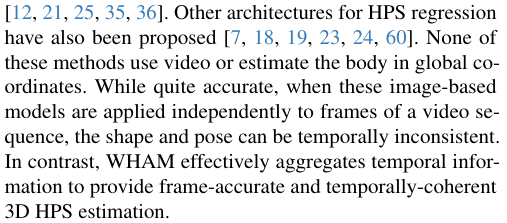
[12, 21, 25, 35, 36]。此外，研究人员还提出了用于 HPS 回归的其他架构 [7, 18, 19, 23, 24, 60]。这些方法均未使用视频，也未在全局坐标系中估计人体。尽管它们相当精确，但当这些基于图像的模型独立应用于视频序列的各帧时，体型和姿态可能会在时间上不一致。相比之下，WHAM 有效地聚合了时序信息，以提供单帧准确且时序连贯的 3D HPS 估计。
Video-Based 3D HPS. Video-based methods typically encode temporal information by combining static features extracted by a backbone from each frame. HMMR [15] uses a convolutional encoder, while VIBE [17] and MEVA [30] employ recurrent neural networks. TCMR [6] divides sequences into past, future, and whole frames, aggregating information to strongly constrain the output with motion consistency. MPS-Net [52] uses attention to capture non-local motion context and a hierarchical architecture to aggregate temporal features. Both MAED [50] and GLoT [43] use transformer architectures [48] to encode videos. MAED encodes videos in both temporal (across frames) and spatial (within each frame) dimensions and leverages the kinematic tree to iteratively regress each joint angle. GLoT encodes long-term temporal correlations and refines local details by focusing on nearby frames. Despite integrating information across frames, all existing video-based methods have lower accuracy than the best single-frame methods.
核对原版排版
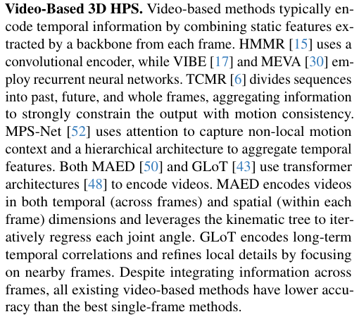
基于视频的 3D HPS。基于视频的方法通常通过结合骨干网络从每帧中提取的静态特征来编码时序信息。HMMR [15] 使用卷积编码器，而 VIBE [17] 和 MEVA [30] 则采用循环神经网络。TCMR [6] 将序列划分为过去帧、未来帧和完整序列帧，聚合信息以运动一致性强有力地约束输出。MPS-Net [52] 利用注意力机制捕获非局部运动上下文，并使用分层架构来聚合时序特征。MAED [50] 和 GLoT [43] 均使用 Transformer 架构 [48] 对视频进行编码。MAED 在时序（跨帧）和空间（每帧内部）两个维度上对视频进行编码，并利用运动学树迭代回归各个关节角度。GLoT 对长期时序相关性进行编码，并通过聚焦邻近帧来细化局部细节。尽管整合了跨帧信息，但所有现有的基于视频的方法精度均低于最佳的单帧方法。
Given limited video training data with ground truth SMPL poses, several single-frame methods infer a mesh from 2D/3D keypoints [5, 8, 31, 34, 39] and use the keypoints as a proxy for training. Another set of approaches exploits 3D mocap data, which is plentiful [32], to train a network to lift 2D joints to 3D poses, which are used as a proxy for ground truth 3D. MotionBERT [62] synthesizes 2D keypoints through orthographic projection to learn a unified motion representation. ProxyCap [61] projects synthetic 3D keypoints into virtual cameras using a heuristic camera pose distribution. Despite benefiting from the scale of mocap datasets, these approaches do not fully utilize the visual information available in the video at test time. Here, we propose a combined network architecture and training strategy that leverages both proxy representations of human pose (lifting) and visual context extracted from video.
核对原版排版
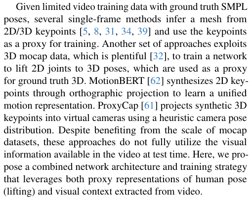
鉴于带有真实 SMPL 姿态真值的视频训练数据有限，若干单帧方法从 2D/3D 关键点推断网格 [5, 8, 31, 34, 39]，并将关键点作为训练的代理。另一类方法则利用极其丰富的 3D 动作捕捉数据 [32] 来训练网络将 2D 关节提升至 3D 姿态，并以此作为 3D 真值的代理。MotionBERT [62] 通过正交投影合成 2D 关键点以学习统一的运动表征。ProxyCap [61] 使用启发式相机位姿分布将合成的 3D 关键点投影到虚拟相机中。尽管受益于动作捕捉数据集的规模，但这些方法在测试时并未充分利用视频中可用的视觉信息。在此，我们提出了一种组合网络架构和训练策略，同时利用人体姿态的代理表征（提升）以及从视频中提取的视觉上下文。
Global 3D Motion Estimation with Dense Sensors. Several methods augment video data with other sensors to estimate 3D HPS in world coordinates. The 3DPW dataset [49] employs pre-calibrated body-worn inertial sensors and a handheld camera to jointly optimize the camera and human motion in challenging environments. Similarly, the EMDB dataset [16] uses electromagnetic sensors with an RGB-D camera, enabling accurate human motion capture in the world. While body-worn sensors aid global human motion reconstruction, they are intrusive, require cooperation, and
核对原版排版
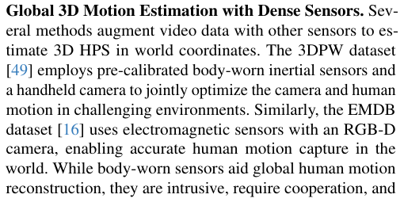
基于稠密传感器的全局 3D 运动估计。有若干方法利用其他传感器来扩充视频数据，以估计世界坐标系下的 3D HPS。3DPW 数据集 [49] 采用预先校准的穿戴式惯性传感器和手持相机，在具有挑战性的环境中联合优化相机与人体运动。类似地，EMDB 数据集 [16] 将电磁传感器与 RGB-D 相机结合使用，实现了在真实世界中精确捕捉人体运动。尽管穿戴式传感器有助于全局人体运动的重建，但它们具有侵入性、需要受试者配合，且
do not help with archival video. BodySLAM++ [9] uses an optimization method with a visual-inertial sensor, comprising stereo cameras and an IMU. In contrast, we use a standard monocular camera, balancing accessibility and accuracy without using specialized equipment. While WHAM can take the camera gyro as input, this is not required. Monocular Global 3D Human Trajectory Estimation. Estimating the global human trajectory from a monocular dynamic camera is challenging. Previous work relies on learned prior distributions of human motion to separate human motion from camera motion. GLAMR [58] computes the global trajectory based on a predicted and infilled 3D motion sequence and optimizes it across multiple individuals in the scene. However, since GLAMR does not consider camera motion cues, the output trajectory may be noisy when the camera is rotating. SLAHMR [55] and PACE [20] use off-the-shelf SLAM algorithms [46, 47] and jointly optimize the camera and human motion to minimize the negative loglikelihood of a learned motion prior [40]. While they achieve good results, their optimization approach is computationally expensive. TRACE [45] is a pure regression method that utilizes optical flow as a motion cue and estimates multiple people at once, but lacks temporal consistency. GloPro [42] regresses the uncertainty of the global human motion in real-time, but requires known camera poses. In contrast, WHAM leverages both explicit and implicit prior knowledge of human motion and efficiently reconstructs accurate and temporally coherent 3D human motion in world coordinates.
核对原版排版
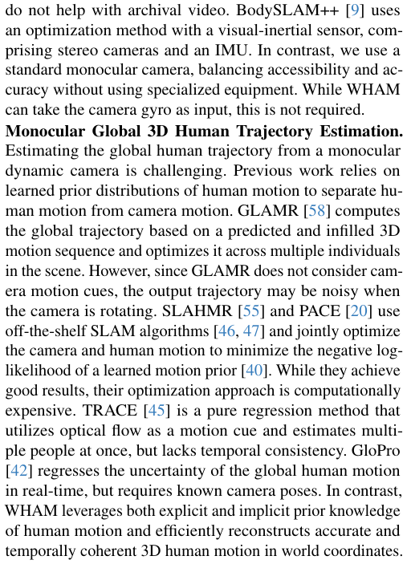
对已归档的历史视频毫无助益。BodySLAM++ [9] 采用了一种基于视觉-惯性传感器的优化方法，该传感器由双目相机和 IMU 组成。相比之下，我们使用的是标准的单目相机，在不依赖专用设备的前提下兼顾了易用性与准确性。虽然 WHAM 能够将相机陀螺仪数据作为输入，但这并非必需。单目全局 3D 人体轨迹估计。从单目动态相机中估计人体的全局轨迹极具挑战性。以往的工作依赖于所学到的人体运动先验分布来将人体运动与相机运动分离。GLAMR [58] 基于预测且补全的 3D 运动序列计算全局轨迹，并在场景中的多个个体之间进行优化。然而，由于 GLAMR 未考虑相机运动线索，当相机发生旋转时，输出的轨迹可能会含有噪声。SLAHMR [55] 和 PACE [20] 使用现成的 SLAM 算法 [46, 47]，联合优化相机与人体运动，以最小化学习到的运动先验 [40] 的负对数似然。尽管它们取得了良好的效果，但其优化方法的计算代价十分高昂。TRACE [45] 是一种纯回归方法，利用光流作为运动线索并同时估计多人，但缺乏时序一致性。GloPro [42] 可以实时回归全局人体运动的不确定性，但需要已知的相机位姿。相比之下，WHAM 同时利用了人体运动的显式和隐式先验知识，高效地在世界坐标系下重建出准确且时序连贯的 3D 人体运动。
3. Methods
核对原版排版
3. 方法
3.1. Overview
核对原版排版
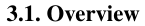
3.1. 概述
An overview of our World-grounded Human with Accurate Motion (WHAM) framework is illustrated in Fig. 2. The input to WHAM is a raw video data {I(t) }T t =0, captured by a camera with possibly unknown motion. Our goal is to predict the corresponding sequence of the SMPL model parameters { Θ(t) }T t =0,aswellastherootorientation{Γ(t)}T t =0and translation {τ(t) }T t =0, expressed in the world coordinate sys- tem. We use ViTPose [54] to detect 2D keypoints {x( 2t D)} tT =0 from which we obtain motion features {ϕ( mt)}T t =0using the motion encoder. Additionally, we use a pretrained image encoder [7, 21, 25] to extract static image features {ϕ( it)} tT =0 and integrate them with {ϕ( mt)}T t =0to obtain fine-grained mo- tion features {ϕˆ( mt)}T t =0from which we regress 3D human motion in the world coordinate system.
核对原版排版
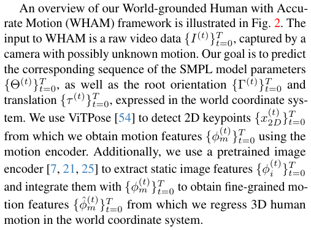
WHAM（World-grounded Humans with Accurate Motion）框架的概述如图 2 所示。WHAM 的输入是由相机捕获的原始视频数据〔行内公式见原版〕，该相机的运动可能未知。我们的目标是预测相应的 SMPL 模型参数序列〔行内公式见原版〕，以及在世界坐标系下表示的根节点朝向〔行内公式见原版〕和平移〔行内公式见原版〕。我们使用 ViTPose [54] 检测 2D 关键点〔行内公式见原版〕，并利用运动编码器从中获取运动特征〔行内公式见原版〕。此外，我们使用预训练的图像编码器 [7, 21, 25] 提取静态图像特征〔行内公式见原版〕，并将其与〔行内公式见原版〕整合以获得细粒度的运动特征〔行内公式见原版〕，我们据此在世界坐标系中回归 3D 人体运动。
3.2. Network Architecture
核对原版排版
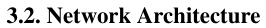
3.2. 网络架构
Uni-directional Motion Encoder and Decoder. In contrast to existing methods [6, 30, 43, 52, 62], which use windows with a fixed time duration, we use uni-directional recurrent
核对原版排版
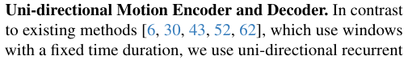
单向运动编码器和解码器。与使用固定时间长度窗口的现有方法 [6, 30, 43, 52, 62] 相比，我们使用单向循环
展开第 3 页原版整页（含全部图表、公式与页眉页脚）
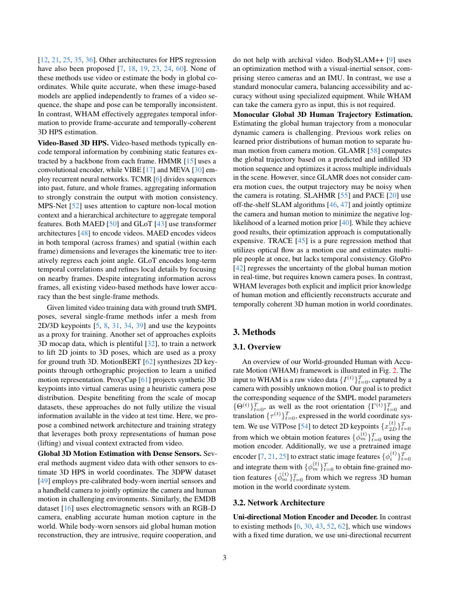
第 4 页Page 4PDF p.4
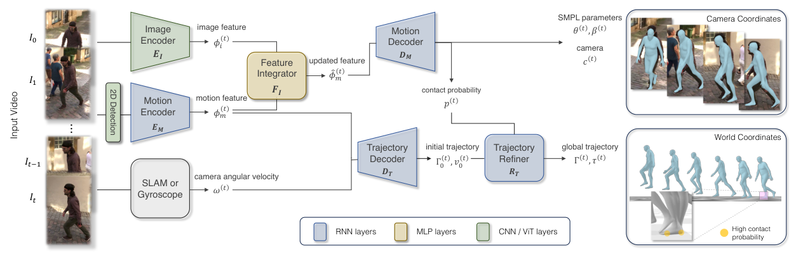
Figure 2. An Overview of WHAM. WHAM takes the sequence of 2D keypoints estimated by a pretrained detector and encodes it into a motion feature. WHAM then updates the motion feature using another sequence of image features extracted from the image encoder through the feature integrator. From the updated motion feature, the Local Motion Decoder estimates 3D motion in the camera coordinate system and foot-ground contact probability. The Trajectory Decoder takes the motion feature and camera angular velocity to initially estimate the global root orientation and egocentric velocity, which are then updated through the Trajectory Refiner using the foot-ground contact. The final output of WHAM is pixel-aligned 3D human motion with the 3D trajectory in the global coordinates.
核对原版排版
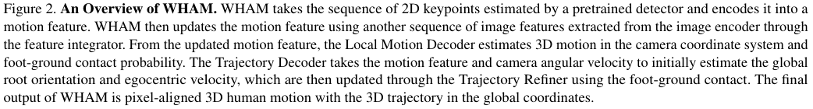
图 2. WHAM 概览。WHAM 接收由预训练检测器估计的 2D 关键点序列，并将其编码为运动特征。然后，WHAM 通过特征整合器，利用从图像编码器提取的另一序列图像特征来更新该运动特征。局部运动解码器（Local Motion Decoder）根据更新后的运动特征估计相机坐标系下的 3D 动作以及脚地接触概率。轨迹解码器（Trajectory Decoder）接收运动特征和相机角速度，以初步估计全局根关节朝向和自身中心速度，随后通过轨迹细化器（Trajectory Refiner）利用脚地接触对其进行更新。WHAM 的最终输出是像素对齐的 3D 人体动作以及全局坐标系下的 3D 轨迹。
neural networks (RNN) for the motion encoder and decoder, making WHAM suitable for online inference. The objective of the motion encoder, EM , is to extract the motion context, ϕm(t), from the current and previous sequence of 2D keypoints and the initial hidden state, h(0) E:
核对原版排版
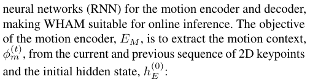
运动编码器和解码器采用神经网络（RNN），这使 WHAM 适合进行在线推理。运动编码器 EM 的目标是从当前和先前的 2D 关键点序列以及初始隐藏状态 h(0) E 中提取运动上下文 ϕm(t)：
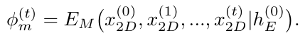
We normalize keypoints to a bounding box around the person and concatenate the box’s center and scale to the keypoints, similar to CLIFF [25]. The role of the motion decoder, DM , is to recover SMPL parameters, ( θ, β ), weak-perspective camera translation, c , and foot-ground contact probability, p , from the motion feature history:
核对原版排版
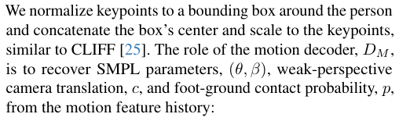
与 CLIFF [25] 类似，我们将关键点归一化到人体周围的边界框，并将边界框的中心和尺度与关键点进行拼接。运动解码器 DM 的作用是从运动特征历史中恢复 SMPL 参数 ( θ, β )、弱透视相机平移量 c 以及脚地接触概率 p：
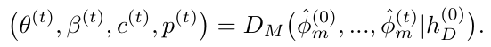
Here, ϕˆ( mt)is the motion feature integrated with the image feature ϕ( it) (described below). During pretraining on synthetic data, the image feature is not available and we set ϕ ˆ m(t)=ϕ m(t).Astheencoderanddecoderaretaskedwith reconstructing a dense 3D representation Θ from a sparse 2D input signal x 2 D , we design an intermediate task to predict the 3D keypoints x 3 D and use them as the intermediate motion representation. This cascaded approach guides ϕm to represent the implicit context of motion and the 3D spatial structure of the body. Similar to PIP [57], we use Neural Initialization that uses MLP to initialize the hidden state of the motion encoder and decoder, � h(0) E, h(0) D �; see section 4.3 and Sup. Mat. for details.
核对原版排版
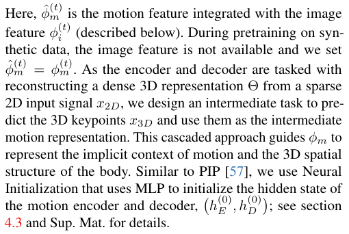
此处，ϕˆ( mt) 是与图像特征 ϕ( it) 整合后的运动特征（下文详述）。在合成数据预训练期间，图像特征不可用，我们令 ϕ ˆ m(t)=ϕ m(t)。由于编码器和解码器的任务是从稀疏 2D 输入信号 x 2 D 重建稠密 3D 表示 Θ，我们设计了一个预测 3D 关键点 x 3 D 的中间任务，并将其用作中间运动表示。这种级联方法引导 ϕm 表征动作的隐式上下文和人体的 3D 空间结构。与 PIP [57] 类似，我们采用神经初始化（Neural Initialization），使用 MLP 初始化运动编码器和解码器的隐藏状态〔行内公式见原版〕；详情见第 4.3 节和补充材料（Sup. Mat.）。
Motion and Visual Feature Integrator. We use the AMASS dataset to synthetically generate 2D sequences by projecting 3D SMPL joints into images with varied camera motions. This provides effectively limitless training data that is far more diverse than existing video datasets that contain ground
核对原版排版
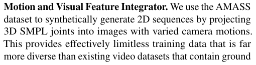
运动与视觉特征整合器。我们使用 AMASS 数据集，通过将 3D SMPL 关节投影到具有各种相机运动的图像中来合成生成 2D 序列。这提供了实际上无限的训练数据，其多样性远超包含真实
truth 3D pose and shape. Although we leverage the temporal human motion context, lifting 2D keypoints to 3D meshes is an ambiguous task. A key idea is to augment this 2D keypoint information with image cues that can help disambiguate the 3D pose. Specifically, we use an image encoder [1, 7, 21, 25], pretrained on the human mesh recovery task, to extract image features ϕi , which contain dense visual contextual information related to the 3D human pose and shape. We then train a feature integrator network, FI , to combine ϕm with ϕi , integrating motion and visual context. The feature integrator uses a simple yet effective residual connection:
核对原版排版
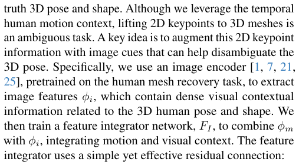
值 3D 姿态与体型的现有视频数据集。尽管我们利用了时序人体动作上下文，但将 2D 关键点提升到 3D 网格是一个多义性任务。一个关键构想是用有助于消除 3D 姿态多义性的图像线索来增强该 2D 关键点信息。具体而言，我们使用在人体网格恢复任务上预训练的图像编码器 [1, 7, 21, 25] 来提取图像特征 ϕi，其中包含与 3D 人体姿态和体型相关的稠密视觉上下文信息。然后，我们训练特征整合器网络 FI，将 ϕm 与 ϕi 相结合，从而整合运动与视觉上下文。该特征整合器采用了简单而有效的残差连接：
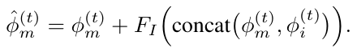
This supplements motion features pretrained on the 2D-to3D lifting task using AMASS with visual context, resulting in enriched motion features that use image evidence to help disambiguate the task.
核对原版排版
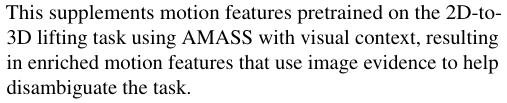
这为利用 AMASS 在 2D 到 3D 提升任务上预训练的运动特征补充了视觉上下文，从而获得了利用图像线索帮助消除该任务多义性的丰富运动特征。
Global Trajectory Decoder. We design an additional decoder, DT , to predict the rough global root orientation Γ0(t) and root velocity v 0(t) from the motion feature ϕ( mt). Sinceϕ m is derived from the input signals in the camera coordinates, it is highly challenging to decouple the human and camera motion from it. To address this ambiguity, we append the angular velocity of the camera, ω(t) , to the motion feature, ϕ( mt), to create a camera-agnostic motion context. This design choice makes WHAM compatible with both off-the-shelf SLAM algorithms [46, 47] and gyroscope measurements that are widely available from modern digital cameras. We recursively predict global orientation, Γ( 0t),usingtheuni- directional RNN.
核对原版排版
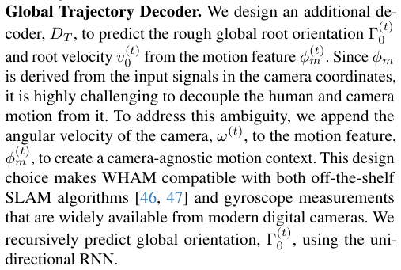
全局轨迹解码器。我们设计了一个额外的解码器 DT，用于根据运动特征 ϕ( mt) 预测粗略的全局根关节朝向 Γ0(t) 和根关节速度 v 0(t)。由于 ϕm 是由相机坐标系下的输入信号推导而来的，因此从中解耦人体运动和相机运动极具挑战性。为了解决这一多义性，我们将相机的角速度 ω(t) 拼接到运动特征 ϕ( mt) 中，以构建相机无关的运动上下文。这一设计选择使得 WHAM 既能兼容现成的 SLAM 算法 [46, 47]，也能兼容现代数码相机广泛提供的陀螺仪测量数据。我们使用单向 RNN 递归地预测全局朝向 Γ( 0t)。
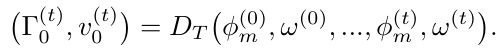
Contact Aware Trajectory Refinement. Good 3D motion
核对原版排版
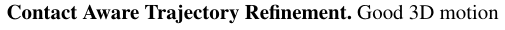
接触感知轨迹细化。在大多数场景中，良好的 3D 动作
展开第 4 页原版整页（含全部图表、公式与页眉页脚）
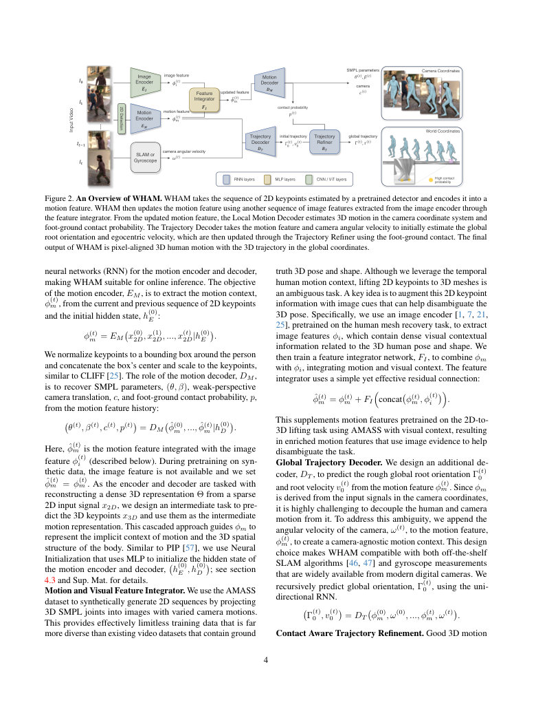
第 5 页Page 5PDF p.5
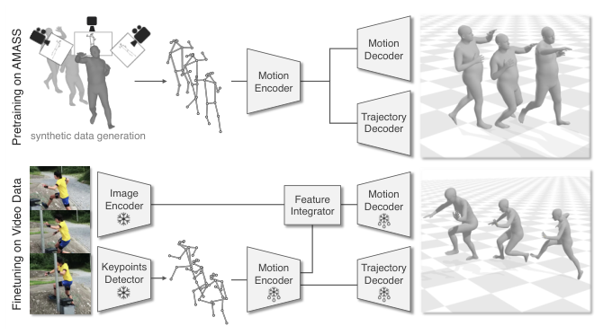
Figure 3. WHAM’s Two-Stage Training Scheme. During pretaining, we generate synthetic 2D keypoint sequences from AMASS [32] and train a motion encoder and decoder on the generated data ( top ). We then leverage video datasets with ground truth SMPL parameters, for which there is much less data. We use the fixedweight pre-trained image encoder and keypoints detector ( ) to extract image features and 2D keypoints. In this stage, we train the feature integration network while fine-tuning the motion encoder and motion/trajectory decoders, marked ( bottom ).
核对原版排版
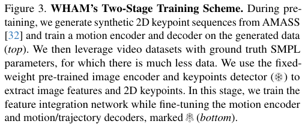
图 3. WHAM 的两阶段训练方案。在预训练期间，我们从 AMASS [32] 生成合成 2D 关键点序列，并在生成的数据上训练运动编码器和解码器（顶部）。随后，我们利用带有 SMPL 参数真值的视频数据集，这类数据要少得多。我们使用固定权重的预训练图像编码器和关键点检测器 ( ) 来提取图像特征和 2D 关键点。在此阶段，我们训练特征整合网络，同时微调运动编码器和运动/轨迹解码器，标记为（底部）。
in world coordinates in most scenarios implies accurate footground contact without sliding. We want WHAM to generalize beyond flat ground planes, which are typically assumed in prior work. Specifically, our new trajectory refiner aims to resolve foot sliding and enables WHAM to generalize well to diverse motions, including climbing stairs. The refinement involves two stages. First, we adjust the ego-centric root velocity to ˜ v(t) to minimize foot sliding, based on the footground contact probability p(t) , estimated from the motion decoder DM :
核对原版排版
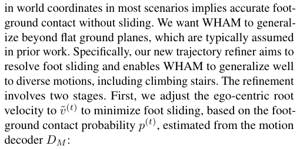
在世界坐标系下意味着准确且无滑动的脚地接触。我们希望 WHAM 能够泛化到先前工作通常假设的平坦地面之外。具体而言，我们提出的全新轨迹细化器旨在消除脚部滑动，使 WHAM 能够很好地泛化到各种动作中（包括爬楼梯）。该细化过程包含两个阶段。首先，我们基于运动解码器 DM 估计的脚地接触概率 p(t)，将自身中心根关节速度调整为 ˜ v(t)，以最大程度减少脚部滑动：
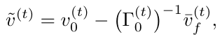
where v ¯ f(t) is the averaged velocity of the toes and heels in world coordinates when their contact probability, p(t) , is higher than a threshold. However, this velocity adjustment often introduces noisy translation when the contact and pose estimation is inaccurate. Therefore, we propose a simple learning mechanism in which a trajectory refining network, RT , updates the root orientation and velocity to address this issue. Finally, the global translation is computed through a roll-out operation:
核对原版排版
其中 v ¯ f(t) 是当脚趾和脚后跟的接触概率 p(t) 高于阈值时，它们在世界坐标系下的平均速度。然而，当接触和姿态估计不准确时，这种速度调整往往会引入带有噪声的平移。因此，我们提出了一种简单的学习机制，通过轨迹细化网络 RT 更新根关节朝向和速度来解决此问题。最后，通过 rollout/轨迹展开操作计算出全局平移量：
In summary, this full process reconstructs accurate 3D human pose and shape in both the camera and world coordinates from a single monocular video sequence (Fig. 2).
核对原版排版
综上所述，该完整流程从单目视频序列中重建出相机坐标系和世界坐标系下精确的 3D 人体姿态与体型（图 2）。
3.3. Training
核对原版排版
3.3. 训练
Pretraining on AMASS. We train in two stages: (1) pretraining with synthetic data, and (2) fine-tuning with real data (Fig. 3). The objective of the pretraining stage is to teach the motion encoder to extract motion context from the input 2D keypoint sequence. The motion and trajectory decoders then map this motion context to the corresponding 3D motion and global trajectory spaces (i.e. they lift the encoding to 3D). We use the AMASS dataset [32] to generate an extensive set of synthetic pairs consisting of sequences of 2D keypoints together with the ground truth SMPL parameters.
核对原版排版
在 AMASS 上的预训练。我们分两个阶段进行训练：(1) 使用合成数据进行预训练，以及 (2) 使用真实数据进行微调（图 3）。预训练阶段的目标是让运动编码器学会从输入的 2D 关键点序列中提取运动上下文。随后，运动和轨迹解码器将该运动上下文映射到相应的 3D 运动和全局轨迹空间（即它们将编码提升到 3D）。我们使用 AMASS 数据集 [32] 生成大量合成数据对，由 2D 关键点序列及对应的 SMPL 参数真值组成。
To synthesize 2D keypoints from AMASS, we create virtual cameras onto which we project 3D keypoints derived from the ground truth mesh. Unlike MotionBERT [62] and ProxyCap [61], which use static cameras for keypoint projection, we employ dynamic cameras that incorporate both rotational and translational motion. This choice has two main motivations. First, it accounts for the inherent differences between human motions captured in static and dynamic camera setups. Second, it enables the learning of a camera-agnostic motion representation, from which the trajectory decoder can reconstruct the global trajectory. We also augment the 2D data with noise and masking. For details of the synthetic generation process see Sup. Mat.
核对原版排版
为了从 AMASS 合成 2D 关键点，我们创建了虚拟相机，并将从真实网格推导出的 3D 关键点投影到虚拟相机中。与使用静态相机进行关键点投影的 MotionBERT [62] 和 ProxyCap [61] 不同，我们采用了兼具旋转和平移运动的动态相机。这一选择有两个主要动因：首先，它考虑了在静态和动态相机设置下所捕获人体运动之间的内在差异；其次，它使得模型能够学习到与相机无关的运动表示，轨迹解码器可据此重建全局轨迹。我们还通过添加噪声和遮挡来增强 2D 数据。关于合成生成过程的细节，参见补充材料（Sup. Mat.）。
Fine-tuning on Video Datasets. Starting with the pretrained network, we fine-tune WHAM on four video datasets: 3DPW [49], Human3.6M [11], MPI-INF-3DHP [33], and InstaVariety [15]. For the human mesh recovery task, we supervise WHAM on ground-truth SMPL parameters from AMASS and 3DPW, 3D keypoints from Human3.6M and MPI-INF3DHP, and 2D keypoints from InstaVariety. For the global trajectory estimation task, we use AMASS, Human3.6M, and MPI-INF-3DHP. Additionally, during training we experiment with adding BEDLAM [1], a large synthetic dataset with realistic video and ground truth SMPL parameters.
核对原版排版
在视频数据集上的微调。从预训练网络出发，我们在四个视频数据集上对 WHAM 进行微调：3DPW [49]、Human3.6M [11]、MPI-INF-3DHP [33] 和 InstaVariety [15]。对于人体网格恢复任务，我们在来自 AMASS 和 3DPW 的 SMPL 参数真值、来自 Human3.6M 和 MPI-INF3DHP 的 3D 关键点以及来自 InstaVariety 的 2D 关键点上对 WHAM 进行监督。对于全局轨迹估计任务，我们使用 AMASS、Human3.6M 和 MPI-INF-3DHP。此外，在训练过程中，我们还尝试加入了 BEDLAM [1]，这是一个包含逼真视频和 SMPL 参数真值的大型合成数据集。
The fine-tuning has two objectives: 1) exposing the network to real 2D keypoints, instead of training it solely on synthetic data, and 2) training the feature integrator network to aggregate motion and image features. To achieve these goals, we jointly train the entire network on the video datasets while setting a smaller learning rate on the pretrained modules (see Fig. 3). Consistent with prior work [6, 17, 30, 43, 52], we employ a pretrained and fixed-weight image encoder [21] to extract image features. However, to leverage recent network architectures and training strategies, we also experiment with different types of encoders [1, 7, 25] in the following section. Implementation Details. For the pretraining stage, we train WHAM on AMASS for 80 epochs with the learning rate of 5 × 10−4 . Then we finetune WHAM on 3DPW, MPI-INF3DHP, Human3.6M, and InstaVariety for 30 epochs. We use a learning rate of 1 × 10−4 for the feature integrator and 1 × 10−5 for the pretrained components during finetuning. During training, we use the Adam optimizer and a batch size
核对原版排版
微调有两个目标：1）让网络接触真实的 2D 关键点，而非仅在合成数据上训练；2）训练特征整合器网络以聚合运动与图像特征。为了实现这些目标，我们在视频数据集上联合训练整个网络，同时对预训练模块设置较小的学习率（见图 3）。与先前的工作 [6, 17, 30, 43, 52] 一致，我们采用预训练且固定权重的图像编码器 [21] 来提取图像特征。然而，为了利用近期的网络架构和训练策略，我们还在后文中尝试了不同类型的编码器 [1, 7, 25]。实现细节。在预训练阶段，我们在 AMASS 上训练 WHAM 80 个 epoch，学习率为 5 × 10−4。随后，我们在 3DPW、MPI-INF3DHP、Human3.6M 和 InstaVariety 上微调 WHAM 30 个 epoch。在微调期间，特征整合器的学习率设为 1 × 10−4，预训练组件的学习率设为 1 × 10−5。在训练期间，我们使用 Adam 优化器，批大小
第 6 页Page 6PDF p.6
of 64 and split sequences into 81-frame chunks.
核对原版排版
设为 64，并将序列划分为 81 帧的数据块。
4. Experiments
核对原版排版
4. 实验
Datasets. We evaluate WHAM on three in-the-wild benchmarks: 3DPW [49], RICH [10], and EMDB [16]. Following previous work [1, 6, 14, 17, 21, 25, 30], we perform the evaluation in camera coordinates. The estimated global trajectory is evaluated on a subset of EMDB ( EMDB 2 ) for which they provide ground truth global motion with dynamic cameras (used for evaluation). We also test on new sequences captured using an iPhone with the gyroscope. See Sup. Mat. for more details on the datasets and iPhone results.
核对原版排版
数据集。我们在三个真实场景（in-the-wild）基准数据集上评估 WHAM：3DPW [49]、RICH [10] 和 EMDB [16]。遵循先前的工作 [1, 6, 14, 17, 21, 25, 30]，我们在相机坐标系下进行评估。估计的全局轨迹在 EMDB 的一个子集（EMDB 2）上进行评估，该子集提供了带有动态相机的全局运动真值（用于评估）。我们还在使用带有陀螺仪的 iPhone 采集的新序列上进行了测试。有关数据集和 iPhone 结果的更多细节，参见补充材料（Sup. Mat.）。
Evaluation metrics. To evaluate the accuracy of 3D human pose and shape estimation, we compute Mean Per Joint Position Error (MPJPE), Procrustes-aligned MPJPE (PA-MPJPE), and Per Vertex Error (PVE) measured in millimeters ( mm ). We compute Acceleration error (Accel, in m/s2 )1 to measure the inter-frame smoothness of the reconstructed motion. We also evaluate the motion reconstruction and trajectory estimation accuracy in the world-frame. Following previous work [20, 55], we split sequences into smaller segments of 100 frames and align each output segment with the ground-truth data using the first two frames (W-MPJPE100) or the entire segment (WA-MPJPE100) in mm . These previous metrics give an unrealistic picture of 3D performance as they do not measure drift over long sequences. Therefore, we also evaluate the error over the entire trajectory after the rigid alignment and measure Root Translation Error (RTE in %) normalized by the actual displacement of the person. We also assess the jitter of the motion in the world coordinate system in 10 m/s3 and foot sliding during the contact (FS in mm ).
核对原版排版
评估指标。为了评估 3D 人体姿态与体型估计的准确性，我们计算以毫米（mm）为单位测量的每关节平均位置误差（MPJPE）、Procrustes 对齐后的 MPJPE（PA-MPJPE）以及每顶点误差（PVE）。我们计算加速度误差（Accel，单位为 m/s2）1 以衡量重建动作的帧间平滑度。我们还在世界坐标系下评估动作重建和轨迹估计的准确性。遵循先前的工作 [20, 55]，我们将序列划分为 100 帧的较短片段，并使用前两帧（W-MPJPE100）或整个片段（WA-MPJPE100）将每个输出片段与真值数据进行对齐（以 mm 为单位）。这些以往的指标无法衡量长序列上的漂移，因而给出了不切实际的 3D 性能表现。因此，我们还在刚性对齐后评估整个轨迹上的误差，并测量通过人体实际位移进行归一化后的根关节平移误差（RTE，以 % 为单位）。我们还评估了世界坐标系下的动作抖动（单位为 10 m/s3）以及接触期间的脚部滑动（FS，以 mm 为单位）。
4.1. 3D Human Motion Recovery
核对原版排版
4.1. 3D 人体动作恢复
Per-frame accuracy. Table 1 presents a comprehensive comparison of WHAM and the existing state-of-the-art per-frame and video-based methods across three benchmark datasets [10, 16, 49]. Because none of the methods are exposed to data from RICH or EMDB during training, results on these datasets are indicative of each method’s ability to generalize. WHAM (Res), WHAM (HR), and WHAM (ViT) correspond to different architectures for the pretrained image encoders, derived from SPIN (ResNet-50) [21], CLIFF (HRNet-W48) [1, 25], and HMR2.0 (ViT-H/16) [7], respectively. Not surprisingly, WHAM (HR) is more accurate than WHAM (Res), while the transformer-based version, WHAM (ViT), is the most accurate. The backbone matters, with WHAM (ViT) outperforming all previous methods on all per-frame metrics (MPJPE, PA-MPJPE, and PVE) on all benchmarks. Even with the simplest ResNet backbone, WHAM (Res) outperforms every method except for ReFit on RICH.
核对原版排版
逐帧准确率。表 1 展示了 WHAM 与现有的最先进逐帧和基于视频的方法在三个基准数据集 [10, 16, 49] 上的全面对比。由于所有方法在训练期间均未接触过来自 RICH 或 EMDB 的数据，因此在这些数据集上的结果反映了各方法的泛化能力。WHAM (Res)、WHAM (HR) 和 WHAM (ViT) 分别对应预训练图像编码器的不同架构，分别衍生自 SPIN (ResNet-50) [21]、CLIFF (HRNet-W48) [1, 25] 和 HMR2.0 (ViT-H/16) [7]。不出所料，WHAM (HR) 比 WHAM (Res) 更准确，而基于 Transformer 的版本 WHAM (ViT) 则是最准确的。主干网络至关重要，WHAM (ViT) 在所有基准数据集上的所有逐帧指标（MPJPE、PA-MPJPE 和 PVE）上均优于以往所有方法。即便采用最简单的 ResNet 主干网络，WHAM (Res) 在 RICH 上除了 ReFit 之外也优于其他所有方法。
1Previous work follows [15] in reporting Accel in mm/ frame2. To remove the dependency on frame rate, we convert all previous results to m/s2 .
核对原版排版
1 先前的工作遵循 [15] 以 mm/frame2 报告 Accel。为了消除对帧率的依赖，我们将以往的所有结果转换为 m/s2。
Figure 4. Qualitative comparison with previous state-of-the-art methods for 3D human pose and shape estimation. See text.
核对原版排版
图 4. 与以往用于 3D 人体姿态与体型估计的最先进方法的定性对比。见正文。
Training on BEDLAM consistently improves accuracy in prior work (see [1, 3, 51]), and we find the same here as shown in Table 2. However, compared to ReFit, WHAM exhibits relatively smaller performance improvement by adding BEDLAM. One possible reason for this is that, unlike ReFit, we did not finetune the image encoder during training to limit training time.
核对原版排版
在以往的工作中，在 BEDLAM 上训练持续提升了准确率（见 [1, 3, 51]），如表 2 所示，我们在此也发现了相同的现象。然而，与 ReFit 相比，WHAM 在加入 BEDLAM 后的性能提升相对较小。造成这种情况的一个可能原因是，与 ReFit 不同，我们在训练期间没有微调图像编码器，以限制训练时间。
Inter-frame smoothness. We also evaluate the inter-frame smoothness using the acceleration error. Compared with state-of-the-art per-frame methods [1, 7, 23, 25], WHAM has significantly lower acceleration error. This indicates that WHAM reconstructs smooth and more plausible 3D human motion across frames while not sacrificing high per-frame accuracy. On the other hand, when compared to recent temporal methods [6, 43, 52], WHAM exhibits comparable or slightly higher acceleration error. However, we observe that these video-based methods tend to over-smooth the human motion, resulting in lower accuracy on per-frame metrics.
核对原版排版
帧间平滑度。我们还利用加速度误差来评估帧间平滑度。与最先进的逐帧方法 [1, 7, 23, 25] 相比，WHAM 的加速度误差显著更低。这表明 WHAM 能够在跨帧重建平滑且更合理 3D 人体动作的同时，不牺牲较高的逐帧准确率。另一方面，与近期的时序方法 [6, 43, 52] 相比，WHAM 的加速度误差相当或略高。然而，我们观察到这些基于视频的方法往往会对人体动作过度平滑，从而导致逐帧指标上的准确率较低。
To provide intuition for these numbers, we qualitatively compare WHAM with TCMR [6] and GLoT [43] in Fig. 4. While producing smooth results, TCMR and GLoT fail to capture the bending of the left knee when the subject is ascending the stairs, while WHAM more accurately reconstructs the 3D human pose.
核对原版排版
为了对这些数值提供直观感受，我们在图 4 中将 WHAM 与 TCMR [6] 和 GLoT [43] 进行了定性对比。尽管 TCMR 和 GLoT 产生了平滑的结果，但在被测主体上楼梯时未能捕捉到左膝的弯曲，而 WHAM 则更准确地重建了 3D 人体姿态。
4.2. 3D Global Trajectory Recovery
核对原版排版
4.2. 3D 全局轨迹恢复
To evaluate global trajectory recovery, we compare WHAM with the state-of-the-art methods and a baseline that combines a SLAM method (DPVO [47]) and a per-frame method (HMR2.0 [7]); see Table 3. WHAM is agnostic to the source of the camera angular velocity and we compare results using DPVO, DROID-SLAM [46] and the ground truth angular velocity (gyro).
核对原版排版
为了评估全局轨迹恢复，我们将 WHAM 与最先进的方法以及结合了 SLAM 方法（DPVO [47]）和逐帧方法（HMR2.0 [7]）的基准进行了对比；见表 3。WHAM 对相机角速度的来源是不敏感的，我们对比了使用 DPVO、DROID-SLAM [46] 以及角速度真值（陀螺仪）的结果。
As shown in Table 3, WHAM outperforms the existing methods on all metrics. Specifically, combining WHAM with
核对原版排版
如表 3 所示，WHAM 在所有指标上均优于现有方法。具体而言，将 WHAM 与
第 7 页Page 7PDF p.7
Table 1. Quantitative comparison of state-of-the-art models on the 3DPW [49], RICH [10], and EMDB [16] datasets. Ordering of per-frame and temporal methods is done separately by descending MPJPE on EMDB (except for PACE). For testing on EMDB, we follow the protocol of EMDB 1 [16]. Parenthesis denotes the number of body joints used to compute MPJPE and PA-MPJPE, and∗ denotes models trained with the 3DPW training set. Bold numbers denote the most accurate method in each column. Accel is in m/s2 , all other errors are in mm .
核对原版排版
表 1. 最先进模型在 3DPW [49]、RICH [10] 和 EMDB [16] 数据集上的定量对比。逐帧方法和时序方法按 EMDB 上的 MPJPE 降序分别排序（PACE 除外）。在 EMDB 上的测试中，我们遵循 EMDB 1 [16] 的评测协议。括号表示用于计算 MPJPE 和 PA-MPJPE 的人体关节点数量，∗ 表示使用 3DPW 训练集训练的模型。粗体数字表示各列中最准确的方法。Accel 的单位为 m/s2，所有其他误差的单位均为 mm。
Table 2. Dataset ablation experiments on 3DPW [49]. R denotes the use of real datasets and B denotes BEDLAM.
核对原版排版
表 2. 3DPW [49] 上的数据集消融实验。R 表示使用真实数据集，B 表示 BEDLAM。
Table 3. Global motion estimation accuracy on EMDB [16].
核对原版排版
表 3. 在 EMDB [16] 上的全局运动估计精度。
DPVO is more accurate than the global trajectory estimation of DPVO combined with HMR2.0, illustrating that our method actively refines the global trajectory instead of performing a simple integration. DROID-SLAM gives slightly
核对原版排版
DPVO 比 DPVO 结合 HMR2.0 的全局轨迹估计更为准确，这表明我们的方法是在主动优化全局轨迹，而非仅仅执行简单的累加积分。DROID-SLAM 给出的结果略微
better results than DPVO. Furthermore, WHAM significantly outperforms the regression-based method, TRACE, on jitter and foot sliding metrics. We further demonstrate this in Figs. 5 and 1, where WHAM captures more consistent and plausible human motion in the global coordinate system than TRACE and SLAHMR for videos captured by dynamic cameras. As depicted in Fig. 6, WHAM outperforms GLAMR, TRACE, and SLAHMR in capturing the pattern of human motion in the global coordinate system.
核对原版排版
优于 DPVO。此外，在抖动和脚部滑动指标上，WHAM 显著优于基于回归的方法 TRACE。我们在图 5 和图 1 中进一步证实了这一点：对于由动态相机拍摄的视频，WHAM 在全局坐标系中捕获到的人体动作比 TRACE 和 SLAHMR 更加连贯且合理。如图 6 所示，在捕获全局坐标系下的人体运动模式方面，WHAM 的表现优于 GLAMR、TRACE 和 SLAHMR。
4.3. Ablation Study
核对原版排版
4.3. 消融实验
To provide further insight into our approach, we conduct ablation studies to analyze the contribution of each component to the performance. As shown in Table 4, our entire system (WHAM) outperforms the different variants of WHAM that ablate a single component. To be specific, we first observe that adding feature integration improves both motion and global trajectory estimation accuracy when compared with an ablated version without feature integration (w/o FI ). Similarly, the removal of the pretraining on the 2D-to-3D lifting task using AMASS [32] (w/o lifting) shows significant performance degradation. WHAM also outperforms the ablation of the Neural Initialization (w/o NI), particularly in the MPJPE metric. In addition, we experiment with WHAM to decode trajectory solely based on the motion context without using the estimated camera angular velocity
核对原版排版
为了更深入地理解我们的方法，我们进行了消融实验，以分析各个组件对性能的贡献。如表 4 所示，我们的完整系统（WHAM）性能优于消融了单个组件的各个 WHAM 变体。具体而言，我们首先观察到，与未进行特征集成的消融版本（w/o FI）相比，加入特征集成同时提高了动作与全局轨迹估计的精度。同样，移除在 AMASS [32] 上基于 2D 到 3D 提升任务的预训练（w/o lifting）会导致性能显著下降。WHAM 也优于移除神经初始化（Neural Initialization）的消融变体（w/o NI），在 MPJPE 指标上尤为明显。此外，我们还测试了仅基于动作上下文解码轨迹、而不使用估计相机角速度的 WHAM 变体
第 8 页Page 8PDF p.8
Figure 5. Qualitative comparison with TRACE [45] and SLAHMR [55] on global human motion estimation with dynamic cameras.
核对原版排版
图 5. 在动态相机下的全局人体动作估计上，与 TRACE [45] 和 SLAHMR [55] 的定性比较。
Figure 6. Comparison of global trajectory estimation on EMDB [16]. Overall, WHAM shows better alignment to ground truth data compared to GLAMR [58], TRACE [45], and SLAHMR [55].
核对原版排版
图 6. 在 EMDB [16] 上的全局轨迹估计比较。总体而言，与 GLAMR [58]、TRACE [45] 和 SLAHMR [55] 相比，WHAM 与真值数据展现出更好的对齐效果。
Table 4. Ablation experiments. See text.
核对原版排版
表 4. 消融实验。详见正文。
(w/o ω ). Although this version shows similar performance in predicting 3D human pose, it suffers from the entanglement of camera and human motion, resulting in significantly high overall trajectory error (RTE). Last, we observe that WHAM without the trajectory refinement (w/o traj. ref.) gives larger global trajectory and foot sliding errors in return for less jitter, indicating that our approach contributes to the global trajectory accuracy and helps reduce foot sliding. Core details are presented here; see Sup. Mat. for more details and information on run-time cost.
核对原版排版
（w/o ω）。尽管该版本在预测 3D 人体姿态时表现出相近的性能，但它饱受相机运动与人体运动相互纠缠的困扰，导致整体轨迹误差（RTE）显著偏高。最后，我们观察到未包含轨迹细化模块的 WHAM（w/o traj. ref.）虽然减少了抖动，但带来了更大的全局轨迹误差和脚部滑动误差，这表明我们的方法提升了全局轨迹精度并有助于减少脚部滑动。核心细节已在此呈现；更多细节以及关于运行时间开销的信息请参阅补充材料（Sup. Mat.）。
5. Conclusion
核对原版排版
5. 结论
WHAM is a new method to recover accurate 3D human motion in global coordinates from a moving camera more efficiently and accurately than the state-of-the-art approaches. Our approach leverages the AMASS dataset to train a network to recursively lift 2D sequences of keypoints to sequences of 3D SMPL parameters. But keypoints alone lack valuable information about the body and its movement. Consequently, we integrate image context information over time and learn to combine it with the motion context to better estimate human body shape and pose. Additionally, our method takes an estimate of the camera angular velocity, which can either be computed from a SLAM method or from the camera’s gyro when available. Finally, we combine all this information with an estimate of foot contact to recover the 3D human motion in global coordinates from a monocular video sequence. WHAM significantly outperforms the existing state-of-the-art methods (both image-based and video-based) on challenging in-the-wild benchmarks in both 3D HPS and the world-coordinate trajectory estimation accuracy. Because of its speed and accuracy, WHAM provides a foundation for in-the-wild motion capture applications.
核对原版排版
WHAM 是一种在移动相机视角下、于全局坐标系中恢复精确 3D 人体动作的新方法，比现有前沿方法更为高效和精确。我们的方法利用 AMASS 数据集训练了一个网络，递归地将 2D 关键点序列提升为 3D SMPL 参数序列。然而，仅靠关键点缺少关于人体及其运动的有价值信息。因此，我们在时序上融合了图像上下文信息，并学习将其与动作上下文结合，以更好地估计人体体型与姿态。此外，我们的方法还利用了估计的相机角速度，该角速度既可以通过 SLAM 方法计算获得，也可以在有条件时直接由相机的陀螺仪提供。最后，我们将所有这些信息与脚部接触估计相结合，从而从单目视频序列中恢复出全局坐标系下的 3D 人体动作。在极具挑战性的真实自然场景（in-the-wild）基准测试中，WHAM 在 3D HPS 以及世界坐标系轨迹估计精度上均显著优于现有的前沿方法（包括基于单张图像和基于视频的方法）。凭借其速度与精度，WHAM 为野外真实场景动作捕捉应用奠定了基础。
Limitations and future directions: WHAM learns about human motion from AMASS, limiting generalization to motions that are out of distribution. While we employ random masking as part of our data synthesis process, our generating approach mainly assumes the scenario where the full body is within the field of view. See Sup. Mat. for more details.
核对原版排版
局限性与未来方向：WHAM 从 AMASS 中学习人体动作，这限制了其对分布外动作的泛化能力。虽然我们在数据合成过程中采用了随机掩码，但我们的生成方法主要假设了全身均处于视场范围内的场景。更多细节请参阅补充材料（Sup. Mat.）。
WHAM opens up many directions for future work. For example, while we use SLAM to estimate the camera’s angular velocity, SLAM could also provide camera intrinsics and extrinsics as well as information about the 3D scene that could be used to enforce consistency between the scene and the human. While WHAM is an online method, designed for real-time applications, it could also initialize an optimization-based post-processing akin to bundle adjustment, which would optimize the camera, scene, and human motion together. Furthermore, a real-time and phone-based implementation of WHAM should be feasible.
核对原版排版
WHAM 为未来的工作开辟了诸多方向。例如，虽然我们利用 SLAM 来估计相机的角速度，但 SLAM 还可以提供相机的内参和外参以及 3D 场景信息，这些信息可用于约束场景与人体之间的一致性。尽管 WHAM 是一种专为实时应用设计的在线方法，但它也可以用于初始化类似于光束法平差（bundle adjustment）的基于优化的后处理过程，从而联合优化相机、场景和人体动作。此外，在手机端实现实时运行的 WHAM 应当是可行的。
Acknowledgements. Part of this work was done when the first author was an intern at the Max Planck Institute for Intelligence System. This work was partially supported through an NSF CAREER Award (CBET 2145473) and a ChanZuckerberg Essential Open Source Software for Science Award.
核对原版排版
致谢。本项工作的一部分是在第一作者于马克斯·普朗克智能系统研究所（Max Planck Institute for Intelligent Systems）实习期间完成的。本研究得到了美国国家科学基金会杰出青年学者奖（NSF CAREER Award，项目号 CBET 2145473）以及陈-扎克伯格科学基础开源软件奖（ChanZuckerberg Essential Open Source Software for Science Award）的部分资助。
CoI Disclosure . MJB has received research gift funds from Adobe, Intel, Nvidia, Meta/Facebook, and Amazon. MJB has financial interests in Amazon and Meshcapade GmbH. While MJB is a co-founder and Chief Scientist at Meshcapade, his research in this project was performed solely at, and funded solely by, the Max Planck Society.
核对原版排版
利益冲突声明（CoI Disclosure）。MJB 曾获得来自 Adobe、Intel、Nvidia、Meta/Facebook 和 Amazon 的研究捐赠基金。MJB 在 Amazon 和 Meshcapade GmbH 拥有经济利益。尽管 MJB 是 Meshcapade 的联合创始人兼首席科学家，但他在此项目中的研究完全是在马克斯·普朗克学会（Max Planck Society）进行并完全由其资助的。
第 9 页Page 9PDF p.9
References
核对原版排版
References
- [1] Michael J. Black, Priyanka Patel, Joachim Tesch, and Jinlong Yang. BEDLAM: A synthetic dataset of bodies exhibiting detailed lifelike animated motion. In Proceedings IEEE/CVF Conf. on Computer Vision and Pattern Recognition (CVPR) , pages 8726–8737, 2023. 2, 4, 5, 6, 7, 13
核对原版排版
- [1] Michael J. Black, Priyanka Patel, Joachim Tesch, and Jinlong Yang. BEDLAM: A synthetic dataset of bodies exhibiting detailed lifelike animated motion. In Proceedings IEEE/CVF Conf. on Computer Vision and Pattern Recognition (CVPR) , pages 8726–8737, 2023. 2, 4, 5, 6, 7, 13
- [2] Federica Bogo, Angjoo Kanazawa, Christoph Lassner, Peter Gehler, Javier Romero, and Michael J. Black. Keep it SMPL: Automatic estimation of 3D human pose and shape from a single image. In Computer Vision – ECCV 2016 , pages 561–578. Springer International Publishing, 2016. 2
核对原版排版
- [2] Federica Bogo, Angjoo Kanazawa, Christoph Lassner, Peter Gehler, Javier Romero, and Michael J. Black. Keep it SMPL: Automatic estimation of 3D human pose and shape from a single image. In Computer Vision – ECCV 2016 , pages 561–578. Springer International Publishing, 2016. 2
- [3] Zhongang Cai, Wanqi Yin, Ailing Zeng, Chen Wei, Qingping Sun, Yanjun Wang, Hui En Pang, Haiyi Mei, Mingyuan Zhang, Lei Zhang, Chen Change Loy, Lei Yang, and Ziwei Liu. SMPLer-X: Scaling up expressive human pose and shape estimation. In Proc. Neural Information Processing Systems (NeurIPS) , 2023. 6
核对原版排版
- [3] Zhongang Cai, Wanqi Yin, Ailing Zeng, Chen Wei, Qingping Sun, Yanjun Wang, Hui En Pang, Haiyi Mei, Mingyuan Zhang, Lei Zhang, Chen Change Loy, Lei Yang, and Ziwei Liu. SMPLer-X: Scaling up expressive human pose and shape estimation. In Proc. Neural Information Processing Systems (NeurIPS) , 2023. 6
- [4] Z. Cao, G. Hidalgo Martinez, T. Simon, S. Wei, and Y. A. Sheikh. Openpose: Realtime multi-person 2d pose estimation using part affinity fields. IEEE Transactions on Pattern Analysis and Machine Intelligence , 2019. 12
核对原版排版
- [4] Z. Cao, G. Hidalgo Martinez, T. Simon, S. Wei, and Y. A. Sheikh. Openpose: Realtime multi-person 2d pose estimation using part affinity fields. IEEE Transactions on Pattern Analysis and Machine Intelligence , 2019. 12
- [5] Hongsuk Choi, Gyeongsik Moon, and Kyoung Mu Lee. Pose2mesh: Graph convolutional network for 3d human pose and mesh recovery from a 2d human pose. In European Conference on Computer Vision (ECCV) , 2020. 3
核对原版排版
- [5] Hongsuk Choi, Gyeongsik Moon, and Kyoung Mu Lee. Pose2mesh: Graph convolutional network for 3d human pose and mesh recovery from a 2d human pose. In European Conference on Computer Vision (ECCV) , 2020. 3
- [6] Hongsuk Choi, Gyeongsik Moon, Ju Yong Chang, and Kyoung Mu Lee. Beyond static features for temporally consistent 3d human pose and shape from a video. In Conference on Computer Vision and Pattern Recognition (CVPR) , 2021. 2, 3, 5, 6, 7, 12
核对原版排版
- [6] Hongsuk Choi, Gyeongsik Moon, Ju Yong Chang, and Kyoung Mu Lee. Beyond static features for temporally consistent 3d human pose and shape from a video. In Conference on Computer Vision and Pattern Recognition (CVPR) , 2021. 2, 3, 5, 6, 7, 12
- [7] Shubham Goel, Georgios Pavlakos, Jathushan Rajasegaran, Angjoo Kanazawa, and Jitendra Malik. Humans in 4D: Reconstructing and tracking humans with transformers. arXiv preprint arXiv:2305.20091 , 2023. 2, 3, 4, 5, 6, 7
核对原版排版
- [7] Shubham Goel, Georgios Pavlakos, Jathushan Rajasegaran, Angjoo Kanazawa, and Jitendra Malik. Humans in 4D: Reconstructing and tracking humans with transformers. arXiv preprint arXiv:2305.20091 , 2023. 2, 3, 4, 5, 6, 7
- [8] Riza Alp Guler and Iasonas Kokkinos. Holopose: Holistic 3d human reconstruction in-the-wild. In Proceedings of the IEEE/CVF Conference on Computer Vision and Pattern Recognition (CVPR) , 2019. 3
核对原版排版
- [8] Riza Alp Guler and Iasonas Kokkinos. Holopose: Holistic 3d human reconstruction in-the-wild. In Proceedings of the IEEE/CVF Conference on Computer Vision and Pattern Recognition (CVPR) , 2019. 3
- [9] Dorian F. Henning, Christopher Choi, Simon Schaefer, and Stefan Leutenegger. Bodyslam++: Fast and tightly-coupled visual-inertial camera and human motion tracking, 2023. 3
核对原版排版
- [9] Dorian F. Henning, Christopher Choi, Simon Schaefer, and Stefan Leutenegger. Bodyslam++: Fast and tightly-coupled visual-inertial camera and human motion tracking, 2023. 3
- [10] Chun-Hao P. Huang, Hongwei Yi, Markus Hoschle, Matvey¨ Safroshkin, Tsvetelina Alexiadis, Senya Polikovsky, Daniel Scharstein, and Michael J. Black. Capturing and inferring dense full-body human-scene contact. In Proceedings IEEE/CVF Conf. on Computer Vision and Pattern Recognition (CVPR) , pages 13274–13285, 2022. 2, 6, 7, 13
核对原版排版
- [10] Chun-Hao P. Huang, Hongwei Yi, Markus Hoschle, Matvey¨ Safroshkin, Tsvetelina Alexiadis, Senya Polikovsky, Daniel Scharstein, and Michael J. Black. Capturing and inferring dense full-body human-scene contact. In Proceedings IEEE/CVF Conf. on Computer Vision and Pattern Recognition (CVPR) , pages 13274–13285, 2022. 2, 6, 7, 13
- [11] Catalin Ionescu, Dragos Papava, Vlad Olaru, and Cristian Sminchisescu. Human3.6m: Large scale datasets and predictive methods for 3d human sensing in natural environments. IEEE Transactions on Pattern Analysis and Machine Intelligence , 36(7):1325–1339, 2014. 2, 5, 12, 14
核对原版排版
- [11] Catalin Ionescu, Dragos Papava, Vlad Olaru, and Cristian Sminchisescu. Human3.6m: Large scale datasets and predictive methods for 3d human sensing in natural environments. IEEE Transactions on Pattern Analysis and Machine Intelligence , 36(7):1325–1339, 2014. 2, 5, 12, 14
- [12] Hanbyul Joo, Natalia Neverova, and Andrea Vedaldi. Exemplar fine-tuning for 3d human pose fitting towards in-the-wild 3d human pose estimation. In 3DV , 2020. 2, 3
核对原版排版
- [12] Hanbyul Joo, Natalia Neverova, and Andrea Vedaldi. Exemplar fine-tuning for 3d human pose fitting towards in-the-wild 3d human pose estimation. In 3DV , 2020. 2, 3
- [13] Hanbyul Joo, Natalia Neverova, and Andrea Vedaldi. Exem-
核对原版排版
- [13] Hanbyul Joo, Natalia Neverova, and Andrea Vedaldi. Exem-
plar fine-tuning for 3d human pose fitting towards in-the-wild 3d human pose estimation. In 3DV , 2020.
核对原版排版
plar fine-tuning for 3d human pose fitting towards in-the-wild 3d human pose estimation. In 3DV , 2020.
- [14] Angjoo Kanazawa, Michael J. Black, David W. Jacobs, and Jitendra Malik. End-to-end recovery of human shape and pose. In Computer Vision and Pattern Regognition (CVPR) , 2018. 2, 6
核对原版排版
- [14] Angjoo Kanazawa, Michael J. Black, David W. Jacobs, and Jitendra Malik. End-to-end recovery of human shape and pose. In Computer Vision and Pattern Regognition (CVPR) , 2018. 2, 6
- [15] Angjoo Kanazawa, Jason Y. Zhang, Panna Felsen, and Jitendra Malik. Learning 3d human dynamics from video. arXiv preprint arXiv:1812.01601 , 2018. 2, 3, 5, 6, 12, 14
核对原版排版
- [15] Angjoo Kanazawa, Jason Y. Zhang, Panna Felsen, and Jitendra Malik. Learning 3d human dynamics from video. arXiv preprint arXiv:1812.01601 , 2018. 2, 3, 5, 6, 12, 14
- [16] Manuel Kaufmann, Jie Song, Chen Guo, Kaiyue Shen, Tianjian Jiang, Chengcheng Tang, Juan Jose Z´ arate, and Otmar´ Hilliges. EMDB: The Electromagnetic Database of Global 3D Human Pose and Shape in the Wild. In International Conference on Computer Vision (ICCV) , 2023. 2, 3, 6, 7, 8, 13, 14
核对原版排版
- [16] Manuel Kaufmann, Jie Song, Chen Guo, Kaiyue Shen, Tianjian Jiang, Chengcheng Tang, Juan Jose Z´ arate, and Otmar´ Hilliges. EMDB: The Electromagnetic Database of Global 3D Human Pose and Shape in the Wild. In International Conference on Computer Vision (ICCV) , 2023. 2, 3, 6, 7, 8, 13, 14
- [17] Muhammed Kocabas, Nikos Athanasiou, and Michael J. Black. VIBE: Video inference for human body pose and shape estimation. In Proceedings IEEE Conf. on Computer Vision and Pattern Recognition (CVPR) , pages 5252–5262. IEEE, 2020. 2, 3, 5, 6, 7, 12
核对原版排版
- [17] Muhammed Kocabas, Nikos Athanasiou, and Michael J. Black. VIBE: Video inference for human body pose and shape estimation. In Proceedings IEEE Conf. on Computer Vision and Pattern Recognition (CVPR) , pages 5252–5262. IEEE, 2020. 2, 3, 5, 6, 7, 12
- [18] Muhammed Kocabas, Chun-Hao P. Huang, Otmar Hilliges, and Michael J. Black. PARE: Part attention regressor for 3D human body estimation. In Proc. International Conference on Computer Vision (ICCV) , pages 11127–11137, 2021. 2, 3, 7, 15
核对原版排版
- [18] Muhammed Kocabas, Chun-Hao P. Huang, Otmar Hilliges, and Michael J. Black. PARE: Part attention regressor for 3D human body estimation. In Proc. International Conference on Computer Vision (ICCV) , pages 11127–11137, 2021. 2, 3, 7, 15
- [19] Muhammed Kocabas, Chun-Hao P. Huang, Joachim Tesch, Lea Muller,¨ Otmar Hilliges, and Michael J. Black. SPEC: Seeing people in the wild with an estimated camera. In Proc. International Conference on Computer Vision (ICCV) , pages 11015–11025, Piscataway, NJ, 2021. IEEE. 3
核对原版排版
- [19] Muhammed Kocabas, Chun-Hao P. Huang, Joachim Tesch, Lea Muller,¨ Otmar Hilliges, and Michael J. Black. SPEC: Seeing people in the wild with an estimated camera. In Proc. International Conference on Computer Vision (ICCV) , pages 11015–11025, Piscataway, NJ, 2021. IEEE. 3
- [20] Muhammed Kocabas, Ye Yuan, Pavlo Molchanov, Yunrong Guo, Michael J. Black, Otmar Hilliges, Jan Kautz, and Umar Iqbal. Pace: Human and motion estimation from in-the-wild videos. In 3DV , 2024. 2, 3, 6, 7
核对原版排版
- [20] Muhammed Kocabas, Ye Yuan, Pavlo Molchanov, Yunrong Guo, Michael J. Black, Otmar Hilliges, Jan Kautz, and Umar Iqbal. Pace: Human and motion estimation from in-the-wild videos. In 3DV , 2024. 2, 3, 6, 7
- [21] Nikos Kolotouros, Georgios Pavlakos, Michael J Black, and Kostas Daniilidis. Learning to reconstruct 3d human pose and shape via model-fitting in the loop. In ICCV , 2019. 2, 3, 4, 5, 6, 7
核对原版排版
- [21] Nikos Kolotouros, Georgios Pavlakos, Michael J Black, and Kostas Daniilidis. Learning to reconstruct 3d human pose and shape via model-fitting in the loop. In ICCV , 2019. 2, 3, 4, 5, 6, 7
- [22] Nikos Kolotouros, Georgios Pavlakos, and Kostas Daniilidis. Convolutional mesh regression for single-image human shape reconstruction. In CVPR , 2019. 2
核对原版排版
- [22] Nikos Kolotouros, Georgios Pavlakos, and Kostas Daniilidis. Convolutional mesh regression for single-image human shape reconstruction. In CVPR , 2019. 2
- [23] Jiefeng Li, Chao Xu, Zhicun Chen, Siyuan Bian, Lixin Yang, and Cewu Lu. Hybrik: A hybrid analytical-neural inverse kinematics solution for 3d human pose and shape estimation. In Proceedings of the IEEE/CVF Conference on Computer Vision and Pattern Recognition , pages 3383–3393, 2021. 2, 3, 6, 7
核对原版排版
- [23] Jiefeng Li, Chao Xu, Zhicun Chen, Siyuan Bian, Lixin Yang, and Cewu Lu. Hybrik: A hybrid analytical-neural inverse kinematics solution for 3d human pose and shape estimation. In Proceedings of the IEEE/CVF Conference on Computer Vision and Pattern Recognition , pages 3383–3393, 2021. 2, 3, 6, 7
- [24] Jiefeng Li, Siyuan Bian, Qi Liu, Jiasheng Tang, Fan Wang, and Cewu Lu. NIKI: Neural inverse kinematics with invertible neural networks for 3d human pose and shape estimation. In Proceedings of the IEEE/CVF Conference on Computer Vision and Pattern Recognition (CVPR) , 2023. 3
核对原版排版
- [24] Jiefeng Li, Siyuan Bian, Qi Liu, Jiasheng Tang, Fan Wang, and Cewu Lu. NIKI: Neural inverse kinematics with invertible neural networks for 3d human pose and shape estimation. In Proceedings of the IEEE/CVF Conference on Computer Vision and Pattern Recognition (CVPR) , 2023. 3
- [25] Zhihao Li, Jianzhuang Liu, Zhensong Zhang, Songcen Xu, and Youliang Yan. Cliff: Carrying location information in full frames into human pose and shape estimation. In ECCV , 2022. 2, 3, 4, 5, 6, 7, 13
核对原版排版
- [25] Zhihao Li, Jianzhuang Liu, Zhensong Zhang, Songcen Xu, and Youliang Yan. Cliff: Carrying location information in full frames into human pose and shape estimation. In ECCV , 2022. 2, 3, 4, 5, 6, 7, 13
- [26] Jing Lin, Ailing Zeng, Haoqian Wang, Lei Zhang, and Yu Li. One-stage 3d whole-body mesh recovery with component
核对原版排版
- [26] Jing Lin, Ailing Zeng, Haoqian Wang, Lei Zhang, and Yu Li. One-stage 3d whole-body mesh recovery with component
第 10 页Page 10PDF p.10
- aware transformer. In Proceedings of the IEEE/CVF Conference on Computer Vision and Pattern Recognition , pages 21159–21168, 2023. 2, 15
核对原版排版
- aware transformer. In Proceedings of the IEEE/CVF Conference on Computer Vision and Pattern Recognition , pages 21159–21168, 2023. 2, 15
- [27] Kevin Lin, Chung-Ching Lin, Lin Liang, Zicheng Liu, and Lijuan Wang. Mpt: Mesh pre-training with transformers for human pose and mesh reconstruction, 2023. 2
核对原版排版
- [27] Kevin Lin, Chung-Ching Lin, Lin Liang, Zicheng Liu, and Lijuan Wang. Mpt: Mesh pre-training with transformers for human pose and mesh reconstruction, 2023. 2
- [28] Miao Liu, Dexin Yang, Yan Zhang, Zhaopeng Cui, James M Rehg, and Siyu Tang. 4d human body capture from egocentric video via 3d scene grounding. In 3DV , 2021. 2
核对原版排版
- [28] Miao Liu, Dexin Yang, Yan Zhang, Zhaopeng Cui, James M Rehg, and Siyu Tang. 4d human body capture from egocentric video via 3d scene grounding. In 3DV , 2021. 2
- [29] Matthew Loper, Naureen Mahmood, Javier Romero, Gerard Pons-Moll, and Michael J. Black. SMPL: A skinned multi-person linear model. ACM Trans. Graphics (Proc. SIGGRAPH Asia) , 34(6):248:1–248:16, 2015. 2
核对原版排版
- [29] Matthew Loper, Naureen Mahmood, Javier Romero, Gerard Pons-Moll, and Michael J. Black. SMPL: A skinned multi-person linear model. ACM Trans. Graphics (Proc. SIGGRAPH Asia) , 34(6):248:1–248:16, 2015. 2
- [30] Zhengyi Luo, S. Alireza Golestaneh, and Kris M. Kitani. 3d human motion estimation via motion compression and refinement. In Proceedings of the Asian Conference on Computer Vision (ACCV) , 2020. 2, 3, 5, 6, 12
核对原版排版
- [30] Zhengyi Luo, S. Alireza Golestaneh, and Kris M. Kitani. 3d human motion estimation via motion compression and refinement. In Proceedings of the Asian Conference on Computer Vision (ACCV) , 2020. 2, 3, 5, 6, 12
- [31] Xiaoxuan Ma, Jiajun Su, Chunyu Wang, Wentao Zhu, and Yizhou Wang. 3d human mesh estimation from virtual markers. In Proceedings of the IEEE/CVF Conference on Computer Vision and Pattern Recognition (CVPR) , pages 534–543, 2023. 3
核对原版排版
- [31] Xiaoxuan Ma, Jiajun Su, Chunyu Wang, Wentao Zhu, and Yizhou Wang. 3d human mesh estimation from virtual markers. In Proceedings of the IEEE/CVF Conference on Computer Vision and Pattern Recognition (CVPR) , pages 534–543, 2023. 3
- [32] Naureen Mahmood, Nima Ghorbani, Nikolaus F. Troje, Gerard Pons-Moll, and Michael J. Black. AMASS: Archive of motion capture as surface shapes. In International Conference on Computer Vision , pages 5442–5451, 2019. 2, 3, 5, 7, 12
核对原版排版
- [32] Naureen Mahmood, Nima Ghorbani, Nikolaus F. Troje, Gerard Pons-Moll, and Michael J. Black. AMASS: Archive of motion capture as surface shapes. In International Conference on Computer Vision , pages 5442–5451, 2019. 2, 3, 5, 7, 12
- [33] Dushyant Mehta, Helge Rhodin, Dan Casas, Pascal Fua, Oleksandr Sotnychenko, Weipeng Xu, and Christian Theobalt. Monocular 3d human pose estimation in the wild using improved cnn supervision. In 3D Vision (3DV), 2017 Fifth International Conference on . IEEE, 2017. 2, 5, 12, 14
核对原版排版
- [33] Dushyant Mehta, Helge Rhodin, Dan Casas, Pascal Fua, Oleksandr Sotnychenko, Weipeng Xu, and Christian Theobalt. Monocular 3d human pose estimation in the wild using improved cnn supervision. In 3D Vision (3DV), 2017 Fifth International Conference on . IEEE, 2017. 2, 5, 12, 14
- [34] Gyeongsik Moon and Kyoung Mu Lee. I2l-meshnet: Imageto-lixel prediction network for accurate 3d human pose and mesh estimation from a single rgb image. In European Conference on Computer Vision (ECCV) , 2020. 2, 3
核对原版排版
- [34] Gyeongsik Moon and Kyoung Mu Lee. I2l-meshnet: Imageto-lixel prediction network for accurate 3d human pose and mesh estimation from a single rgb image. In European Conference on Computer Vision (ECCV) , 2020. 2, 3
- [35] Gyeongsik Moon, Hongsuk Choi, and Kyoung Mu Lee. Neuralannot: Neural annotator for 3d human mesh training sets. In Computer Vision and Pattern Recognition Workshop (CVPRW) , 2022. 2, 3, 14
核对原版排版
- [35] Gyeongsik Moon, Hongsuk Choi, and Kyoung Mu Lee. Neuralannot: Neural annotator for 3d human mesh training sets. In Computer Vision and Pattern Recognition Workshop (CVPRW) , 2022. 2, 3, 14
- [36] Gyeongsik Moon, Hongsuk Choi, Sanghyuk Chun, Jiyoung Lee, and Sangdoo Yun. Three recipes for better 3d pseudo-gts of 3d human mesh estimation in the wild. In Computer Vision and Pattern Recognition Workshop (CVPRW) , 2023. 2, 3
核对原版排版
- [36] Gyeongsik Moon, Hongsuk Choi, Sanghyuk Chun, Jiyoung Lee, and Sangdoo Yun. Three recipes for better 3d pseudo-gts of 3d human mesh estimation in the wild. In Computer Vision and Pattern Recognition Workshop (CVPRW) , 2023. 2, 3
- [37] Ahmed A. A. Osman, Timo Bolkart, and Michael J. Black. STAR: Sparse trained articulated human body regressor. In Computer Vision - ECCV 2020 , pages 598–613. Springer, 2020. 2
核对原版排版
- [37] Ahmed A. A. Osman, Timo Bolkart, and Michael J. Black. STAR: Sparse trained articulated human body regressor. In Computer Vision - ECCV 2020 , pages 598–613. Springer, 2020. 2
- [38] Georgios Pavlakos, Vasileios Choutas, Nima Ghorbani, Timo Bolkart, Ahmed A. A. Osman, Dimitrios Tzionas, and Michael J. Black. Expressive body capture: 3D hands, face, and body from a single image. In Proceedings IEEE Conf. on Computer Vision and Pattern Recognition (CVPR) , pages 10975–10985, 2019. 2, 13
核对原版排版
- [38] Georgios Pavlakos, Vasileios Choutas, Nima Ghorbani, Timo Bolkart, Ahmed A. A. Osman, Dimitrios Tzionas, and Michael J. Black. Expressive body capture: 3D hands, face, and body from a single image. In Proceedings IEEE Conf. on Computer Vision and Pattern Recognition (CVPR) , pages 10975–10985, 2019. 2, 13
- [39] Georgios Pavlakos, Luyang Zhu, Xiaowei Zhou, and Kostas Daniilidis. Learning to estimate 3d human pose and shape from a single color image. In Proceedings of the IEEE/CVF Conference on Computer Vision and Pattern Recognition (CVPR) , pages 459–468, 2019. 3
核对原版排版
- [39] Georgios Pavlakos, Luyang Zhu, Xiaowei Zhou, and Kostas Daniilidis. Learning to estimate 3d human pose and shape from a single color image. In Proceedings of the IEEE/CVF Conference on Computer Vision and Pattern Recognition (CVPR) , pages 459–468, 2019. 3
- [40] Davis Rempe, Tolga Birdal, Aaron Hertzmann, Jimei Yang, Srinath Sridhar, and Leonidas J. Guibas. Humor: 3d human motion model for robust pose estimation. In International Conference on Computer Vision (ICCV) , 2021. 3
核对原版排版
- [40] Davis Rempe, Tolga Birdal, Aaron Hertzmann, Jimei Yang, Srinath Sridhar, and Leonidas J. Guibas. Humor: 3d human motion model for robust pose estimation. In International Conference on Computer Vision (ICCV) , 2021. 3
- [41] Nitin Saini, Chun-Hao P. Huang, Michael J. Black, and Aamir Ahmad. Smartmocap: Joint estimation of human and camera motion using uncalibrated rgb cameras. IEEE Robotics and Automation Letters , pages 1–8, 2023. 2
核对原版排版
- [41] Nitin Saini, Chun-Hao P. Huang, Michael J. Black, and Aamir Ahmad. Smartmocap: Joint estimation of human and camera motion using uncalibrated rgb cameras. IEEE Robotics and Automation Letters , pages 1–8, 2023. 2
- [42] Simon Schaefer, Dorian F. Henning, and Stefan Leutenegger. Glopro: Globally-consistent uncertainty-aware 3d human pose estimation & tracking in the wild, 2023. 2, 3
核对原版排版
- [42] Simon Schaefer, Dorian F. Henning, and Stefan Leutenegger. Glopro: Globally-consistent uncertainty-aware 3d human pose estimation & tracking in the wild, 2023. 2, 3
- [43] Xiaolong Shen, Zongxin Yang, Xiaohan Wang, Jianxin Ma, Chang Zhou, and Yi Yang. Global-to-local modeling for video-based 3d human pose and shape estimation. In Proceedings of the IEEE/CVF Conference on Computer Vision and Pattern Recognition (CVPR) , pages 8887–8896, 2023. 2, 3, 5, 6, 7, 12
核对原版排版
- [43] Xiaolong Shen, Zongxin Yang, Xiaohan Wang, Jianxin Ma, Chang Zhou, and Yi Yang. Global-to-local modeling for video-based 3d human pose and shape estimation. In Proceedings of the IEEE/CVF Conference on Computer Vision and Pattern Recognition (CVPR) , pages 8887–8896, 2023. 2, 3, 5, 6, 7, 12
- [44] Soyong Shin, Zhixiong Li, and Eni Halilaj. Markerless motion tracking with noisy video and imu data. IEEE Transactions on Biomedical Engineering , 70(11):3082–3092, 2023. 12
核对原版排版
- [44] Soyong Shin, Zhixiong Li, and Eni Halilaj. Markerless motion tracking with noisy video and imu data. IEEE Transactions on Biomedical Engineering , 70(11):3082–3092, 2023. 12
- [45] Yu Sun, Qian Bao, Wu Liu, Tao Mei, and Michael J. Black. TRACE: 5D Temporal Regression of Avatars with Dynamic Cameras in 3D Environments. In IEEE/CVF Conf. on Computer Vision and Pattern Recognition (CVPR) , 2023. 1, 2, 3, 7, 8
核对原版排版
- [45] Yu Sun, Qian Bao, Wu Liu, Tao Mei, and Michael J. Black. TRACE: 5D Temporal Regression of Avatars with Dynamic Cameras in 3D Environments. In IEEE/CVF Conf. on Computer Vision and Pattern Recognition (CVPR) , 2023. 1, 2, 3, 7, 8
- [46] Zachary Teed and Jia Deng. DROID-SLAM: Deep Visual SLAM for Monocular, Stereo, and RGB-D Cameras. Advances in neural information processing systems , 2021. 3, 4, 6, 7
核对原版排版
- [46] Zachary Teed and Jia Deng. DROID-SLAM: Deep Visual SLAM for Monocular, Stereo, and RGB-D Cameras. Advances in neural information processing systems , 2021. 3, 4, 6, 7
- [47] Zachary Teed, Lahav Lipson, and Jia Deng. Deep patch visual odometry. arXiv preprint arXiv:2208.04726 , 2022. 3, 4, 6, 7
核对原版排版
- [47] Zachary Teed, Lahav Lipson, and Jia Deng. Deep patch visual odometry. arXiv preprint arXiv:2208.04726 , 2022. 3, 4, 6, 7
- [48] Ashish Vaswani, Noam Shazeer, Niki Parmar, Jakob Uszkoreit, Llion Jones, Aidan N Gomez, Ł ukasz Kaiser, and Illia Polosukhin. Attention is all you need. In Advances in Neural Information Processing Systems . Curran Associates, Inc., 2017. 3
核对原版排版
- [48] Ashish Vaswani, Noam Shazeer, Niki Parmar, Jakob Uszkoreit, Llion Jones, Aidan N Gomez, Ł ukasz Kaiser, and Illia Polosukhin. Attention is all you need. In Advances in Neural Information Processing Systems . Curran Associates, Inc., 2017. 3
- [49] Timo von Marcard, Roberto Henschel, Michael Black, Bodo Rosenhahn, and Gerard Pons-Moll. Recovering accurate 3d human pose in the wild using imus and a moving camera. In European Conference on Computer Vision (ECCV) , 2018. 2, 3, 5, 6, 7, 12
核对原版排版
- [49] Timo von Marcard, Roberto Henschel, Michael Black, Bodo Rosenhahn, and Gerard Pons-Moll. Recovering accurate 3d human pose in the wild using imus and a moving camera. In European Conference on Computer Vision (ECCV) , 2018. 2, 3, 5, 6, 7, 12
- [50] Ziniu Wan, Zhengjia Li, Maoqing Tian, Jianbo Liu, Shuai Yi, and Hongsheng Li. Encoder-decoder with multi-level attention for 3d human shape and pose estimation. In The IEEE International Conference on Computer Vision (ICCV) , 2021. 3
核对原版排版
- [50] Ziniu Wan, Zhengjia Li, Maoqing Tian, Jianbo Liu, Shuai Yi, and Hongsheng Li. Encoder-decoder with multi-level attention for 3d human shape and pose estimation. In The IEEE International Conference on Computer Vision (ICCV) , 2021. 3
- [51] Yufu Wang and Kostas Daniilidis. Refit: Recurrent fitting network for 3d human recovery. In International Conference on Computer Vision , 2023. 6, 7
核对原版排版
- [51] Yufu Wang and Kostas Daniilidis. Refit: Recurrent fitting network for 3d human recovery. In International Conference on Computer Vision , 2023. 6, 7
- [52] Wen-Li Wei, Jen-Chun Lin, Tyng-Luh Liu, and HongYuan Mark Liao. Capturing humans in motion: Temporalattentive 3d human pose and shape estimation from monocular video. In The IEEE Conference on Computer Vision and Pattern Recognition (CVPR) , 2022. 2, 3, 5, 6, 7, 12
核对原版排版
- [52] Wen-Li Wei, Jen-Chun Lin, Tyng-Luh Liu, and HongYuan Mark Liao. Capturing humans in motion: Temporalattentive 3d human pose and shape estimation from monocular video. In The IEEE Conference on Computer Vision and Pattern Recognition (CVPR) , 2022. 2, 3, 5, 6, 7, 12
- [53] Hongyi Xu, Eduard Gabriel Bazavan, Andrei Zanfir, William T. Freeman, Rahul Sukthankar, and Cristian Sminchisescu. GHUM & GHUML: generative 3D human shape
核对原版排版
- [53] Hongyi Xu, Eduard Gabriel Bazavan, Andrei Zanfir, William T. Freeman, Rahul Sukthankar, and Cristian Sminchisescu. GHUM & GHUML: generative 3D human shape
第 11 页Page 11PDF p.11
and articulated pose models. In IEEE/CVF Conference on Computer Vision and Pattern Recognition (CVPR) , pages 6183–6192, 2020. 2
核对原版排版
and articulated pose models. In IEEE/CVF Conference on Computer Vision and Pattern Recognition (CVPR) , pages 6183–6192, 2020. 2
- [54] Yufei Xu, Jing Zhang, Qiming Zhang, and Dacheng Tao. ViTPose: Simple vision transformer baselines for human pose estimation. In Advances in Neural Information Processing Systems , 2022. 2, 3
核对原版排版
- [54] Yufei Xu, Jing Zhang, Qiming Zhang, and Dacheng Tao. ViTPose: Simple vision transformer baselines for human pose estimation. In Advances in Neural Information Processing Systems , 2022. 2, 3
- [55] Vickie Ye, Georgios Pavlakos, Jitendra Malik, and Angjoo Kanazawa. Decoupling human and camera motion from videos in the wild. In IEEE Conference on Computer Vision and Pattern Recognition (CVPR) , 2023. 1, 2, 3, 6, 7, 8, 14
核对原版排版
- [55] Vickie Ye, Georgios Pavlakos, Jitendra Malik, and Angjoo Kanazawa. Decoupling human and camera motion from videos in the wild. In IEEE Conference on Computer Vision and Pattern Recognition (CVPR) , 2023. 1, 2, 3, 6, 7, 8, 14
- [56] Xinyu Yi, Yuxiao Zhou, and Feng Xu. Transpose: Real-time 3d human translation and pose estimation with six inertial sensors. ACM Transactions on Graphics , 40(4), 2021. 12
核对原版排版
- [56] Xinyu Yi, Yuxiao Zhou, and Feng Xu. Transpose: Real-time 3d human translation and pose estimation with six inertial sensors. ACM Transactions on Graphics , 40(4), 2021. 12
- [57] Xinyu Yi, Yuxiao Zhou, Marc Habermann, Soshi Shimada, Vladislav Golyanik, Christian Theobalt, and Feng Xu. Physical inertial poser (pip): Physics-aware real-time human motion tracking from sparse inertial sensors. In IEEE/CVF Conference on Computer Vision and Pattern Recognition (CVPR) , 2022. 4, 14
核对原版排版
- [57] Xinyu Yi, Yuxiao Zhou, Marc Habermann, Soshi Shimada, Vladislav Golyanik, Christian Theobalt, and Feng Xu. Physical inertial poser (pip): Physics-aware real-time human motion tracking from sparse inertial sensors. In IEEE/CVF Conference on Computer Vision and Pattern Recognition (CVPR) , 2022. 4, 14
- [58] Ye Yuan, Umar Iqbal, Pavlo Molchanov, Kris Kitani, and Jan Kautz. Glamr: Global occlusion-aware human mesh recovery with dynamic cameras. In Proceedings of the IEEE/CVF Conference on Computer Vision and Pattern Recognition (CVPR) , 2022. 3, 7, 8
核对原版排版
- [58] Ye Yuan, Umar Iqbal, Pavlo Molchanov, Kris Kitani, and Jan Kautz. Glamr: Global occlusion-aware human mesh recovery with dynamic cameras. In Proceedings of the IEEE/CVF Conference on Computer Vision and Pattern Recognition (CVPR) , 2022. 3, 7, 8
- [59] Feng Zhang, Xiatian Zhu, Hanbin Dai, Mao Ye, and Ce Zhu. Distribution-aware coordinate representation for human pose estimation. In IEEE/CVF Conference on Computer Vision and Pattern Recognition (CVPR) , 2020. 2
核对原版排版
- [59] Feng Zhang, Xiatian Zhu, Hanbin Dai, Mao Ye, and Ce Zhu. Distribution-aware coordinate representation for human pose estimation. In IEEE/CVF Conference on Computer Vision and Pattern Recognition (CVPR) , 2020. 2
- [60] Hongwen Zhang, Yating Tian, Yuxiang Zhang, Mengcheng Li, Liang An, Zhenan Sun, and Yebin Liu. Pymaf-x: Towards well-aligned full-body model regression from monocular images. IEEE Transactions on Pattern Analysis and Machine Intelligence , 2023. 2, 3
核对原版排版
- [60] Hongwen Zhang, Yating Tian, Yuxiang Zhang, Mengcheng Li, Liang An, Zhenan Sun, and Yebin Liu. Pymaf-x: Towards well-aligned full-body model regression from monocular images. IEEE Transactions on Pattern Analysis and Machine Intelligence , 2023. 2, 3
- [61] Yuxiang Zhang, Hongwen Zhang, Liangxiao Hu, Hongwei Yi, Shengping Zhang, and Yebin Liu. Real-time monocular fullbody capture in world space via sequential proxy-to-motion learning. arXiv preprint arXiv:2307.01200 , 2023. 2, 3, 5, 12
核对原版排版
- [61] Yuxiang Zhang, Hongwen Zhang, Liangxiao Hu, Hongwei Yi, Shengping Zhang, and Yebin Liu. Real-time monocular fullbody capture in world space via sequential proxy-to-motion learning. arXiv preprint arXiv:2307.01200 , 2023. 2, 3, 5, 12
- [62] Wentao Zhu, Xiaoxuan Ma, Zhaoyang Liu, Libin Liu, Wayne Wu, and Yizhou Wang. Motionbert: A unified perspective on learning human motion representations. In Proceedings of the IEEE/CVF International Conference on Computer Vision , 2023. 2, 3, 5
核对原版排版
- [62] Wentao Zhu, Xiaoxuan Ma, Zhaoyang Liu, Libin Liu, Wayne Wu, and Yizhou Wang. Motionbert: A unified perspective on learning human motion representations. In Proceedings of the IEEE/CVF International Conference on Computer Vision , 2023. 2, 3, 5
第 12 页Page 12PDF p.12
As promised in the main paper, this supplemental document provides details of our synthetic data generation, the datasets we use, our network training, run-time cost, and limitations. Additionally, please refer to our project page at http://wham.is.tue.mpg.de/ for results that illustrate our method and recent SOTA methods applied to video sequences.
核对原版排版
As promised in the main paper, this supplemental document provides details of our synthetic data generation, the datasets we use, our network training, run-time cost, and limitations. Additionally, please refer to our project page at http://wham.is.tue.mpg.de/ for results that illustrate our method and recent SOTA methods applied to video sequences.
A. Synthetic data generation
核对原版排版
A. 合成数据生成
To address the scarcity of the video data with paired 3D ground truth, we pretrain WHAM on an extensive number of synthetic 2D keypoint sequences for which we have the ground truth 3D poses. In this section, we describe the process of data synthesis from AMASS [32].
核对原版排版
为了解决带有配对 3D 真值的视频数据稀缺的问题，我们在大量具有对应真值 3D 姿态的合成 2D 关键点序列上对 WHAM 进行了预训练。在本节中，我们介绍了基于 AMASS [32] 进行数据合成的过程。
2D keypoint sequence synthesis. During training, we sample sequences of SMPL poses of length L = 81 from AMASS. Then, similar to MEVA [30], we uniformly upsample or downsample the frames to speed up or down the motion by up to 50% of the original speed. Furthermore, we apply a random root rotation ∆Γ ∼U (0◦ , 360◦ ) to the axis that is vertical to the ground plane and Gaussian noise to the shape parameter ∆ β ∼N (0 , 0 . 1). Given the augmented SMPL sequence, we extract 3D keypoints that correspond to the MS-COCO keypoints and add 3D noise modeled following previous work [44]. Finally, we apply a random mask with the average probability of p = 0 . 15 to the 3D keypoints and project them onto the virtual camera as described below.
核对原版排版
2D 关键点序列合成。在训练期间，我们从 AMASS 中采样长度为 L = 81 的 SMPL 姿态序列。随后，类似于 MEVA [30]，我们对帧进行均匀上采样或下采样，以在原始速度的基础上加快或减慢动作最高达 50%。此外，我们绕垂直于地平面的轴施加随机根关节旋转 ∆Γ ∼U (0◦ , 360◦ )，并对形状参数添加高斯噪声 ∆ β ∼N (0 , 0 . 1)。在得到增强后的 SMPL 序列后，我们提取出对应于 MS-COCO 关键点的 3D 关键点，并依照先前工作 [44] 建模并添加 3D 噪声。最后，我们以平均概率 p = 0 . 15 对这些 3D 关键点应用随机掩码，并按照下文所述将它们投影到虚拟相机中。
Contact label generation. The goal of generating a contact label is to train the motion decoder to detect the footground contact accurately. Previous work [61] uses both the velocity and height of the feet to generate contact labels. However, in order to generalize our approach to arbitrary ground conditions such as slopes or stairs, we only use foot velocity to compute the ground truth contact labels, similar to TransPose [56]. We use the heel and toe vertices of each foot to define foot-ground contact and compute the probability as below:
核对原版排版
接触标签生成。生成接触标签的目的是训练动作解码器准确检测足部与地面的接触。先前的工作 [61] 同时利用足部的速度和高度来生成接触标签。然而，为了使我们的方法能够泛化到任意地面条件（例如斜坡或楼梯），类似于 TransPose [56]，我们仅使用足部速度来计算真值接触标签。我们利用每只脚的脚跟和脚尖顶点来定义足地接触，并如下计算接触概率：
We set the threshold velocity vt = 1cm / frame and the coefficient α = 5.
核对原版排版
我们将阈值速度设为 vt = 1cm / frame，系数设为 α = 5。
Camera motion synthesis. We begin with generating the initial pose of the virtual camera, followed by the modeling of the camera motion. We model the initial roll and pitch angles of the camera using Gaussian distributions:
核对原版排版
相机运动合成。我们首先生成虚拟相机的初始位姿，随后对相机运动进行建模。我们使用高斯分布对相机的初始横滚角（roll）和俯仰角（pitch）进行建模：
Here, we do not model the initial yaw angle since it is already handled by the random SMPL root rotation ∆Γ.
核对原版排版
在此，我们不对初始偏航角（yaw）进行建模，因为随机 SMPL 根关节旋转 ∆Γ 已经对其进行了处理。
Subsequently, we sample the initial camera translation, using a mix of uniform and normal distributions, to capture the ground-truth 3D pose in the camera coordinates:
核对原版排版
随后，我们结合均匀分布与正态分布对相机的初始平移进行采样，以在相机坐标系中捕获 3D 真值姿态：
Here, d = w · Tz/ 2 f is the maximum displacement of the camera to capture the 3D keypoints within the field of view, R(0) is the initial camera pose, t(0) is the initial human translation, w is the image size, and f is the focal length. Next, we sample the magnitude of change in the camera’s extrinsics with the Gaussian distributions:
核对原版排版
在此，d = w · Tz/ 2 f 是相机为了在视场内捕获 3D 关键点所允许的最大位移，R(0) 是相机初始位姿，t(0) 是人体初始平移，w 是图像尺寸，f 是焦距。接下来，我们使用高斯分布对相机外参的变化幅度进行采样：
Finally, we interpolate the extrinsics and construct the camera’s dynamic path. Here, we sample the time stamp with 20% of noise, instead of uniform sampling, to model the non-linear camera motion.
核对原版排版
最后，我们对外参进行插值以构建相机的动态路径。在此，我们不对时间戳进行均匀采样，而是加入 20% 的噪声进行采样，以模拟相机的非线性运动。
We use 6.7M frames in total and uniformly sample them during the synthetic data generation.
核对原版排版
我们总共使用了 670 万（6.7M）帧，并在合成数据生成过程中对其进行均匀采样。
B. Datasets
核对原版排版
B. 数据集
In this section, we illustrate the datasets we use for training and testing our method.
核对原版排版
在本节中，我们介绍用于训练和测试我们方法的数据集。
Human3.6M [11] is an indoor dataset containing individuals performing 15 distinct actions captured by both a motioncapture (mocap) system and 4 calibrated video cameras. The ground truth 3D keypoint locations are provided by the mocap. Following previous work [6, 17, 43, 52], we use 5 subjects (S1, S5, S6, S7, and S8) to train our network after downsampling the mocap data to 25 fps.
核对原版排版
Human3.6M [11] 是一个室内数据集，包含由动作捕捉（mocap）系统和 4 台标定摄像机采集的、不同受试者执行 15 种不同动作的数据。动捕系统提供了 3D 关键点真值位置。遵循先前的工作 [6, 17, 43, 52]，我们将动捕数据下采样至 25 fps，并使用 5 名受试者（S1、S5、S6、S7 和 S8）来训练我们的网络。
MPI-INF-3DHP [33] is a multi-view and markerless dataset containing individuals performing various ranges of motion with corresponding ground-truth 3D keypoint locations. To train the network, we use the training set of the dataset, containing 8 subjects and 16 videos per subject.
核对原版排版
MPI-INF-3DHP [33] 是一个多视角且无标记点（markerless）的数据集，包含受试者执行各种动作范围的记录及相应的 3D 关键点真值位置。为了训练网络，我们使用了该数据集的训练集，其中包含 8 名受试者，每名受试者包含 16 段视频。
InstaVariety [15] is a large-scale in-the-wild video dataset with large variations in subjects, motion, and environment. The dataset contains pseudo-ground-truth 2D keypoints detected by OpenPose [4]. We train our method on the training split of the dataset.
核对原版排版
InstaVariety [15] 是一个大规模真实自然场景（in-the-wild）视频数据集，涵盖了受试者、动作和环境的多样变化。该数据集包含由 OpenPose [4] 检测出的伪真值（pseudo-ground-truth）2D 关键点。我们在该数据集的训练划分（training split）上训练我们的方法。
3DPW [49] is an in-the-wild video dataset containing ground truth 3D pose captured by a hand-held camera and 13 bodyworn inertial sensors. We use the train, validation, and test splits of 3DPW for training, validating, and testing our method.
核对原版排版
3DPW [49] 是一个真实自然场景下的视频数据集，包含由手持相机和 13 个穿戴式惯性传感器捕获的 3D 真值姿态。我们使用 3DPW 的训练集、验证集和测试集划分分别来训练、验证和测试我们的方法。
第 13 页Page 13PDF p.13
RICH [10] is a large-scale multi-view dataset captured in both indoor and outdoor environments. RICH provides the ground truth SMPL-X [38] parameters. Following previous work [1], we use the test split of the dataset to evaluate our method on 3D pose estimation accuracy.
核对原版排版
RICH [10] 是一个在室内和室外环境中采集的大规模多视角数据集。RICH 提供了真值 SMPL-X [38] 参数。遵循先前的工作 [1]，我们使用该数据集的测试划分来评估我们方法在 3D 姿态估计精度上的表现。
EMDB [16] is a recently captured dataset that uses a dynamic camera and body-worn electromagnetic (EM) sensors. EMDB provides ground-truth SMPL parameters as well as the global trajectory of the individuals in a global coordinate system. We use two distinct test splits, EMDB 1 and EMDB 2 , to evaluate the performance on 3D pose and shape estimation ( EMDB 1 ) and global trajectory estimation ( EMDB 2 ).
核对原版排版
EMDB [16] 是近期采集的数据集，它采用动态相机和穿戴式电磁（EM）传感器。EMDB 提供了真值 SMPL 参数以及受试者在全局坐标系中的全局轨迹。我们使用两个不同的测试划分 EMDB 1 和 EMDB 2，分别评估 3D 姿态与体型估计（EMDB 1）以及全局轨迹估计（EMDB 2）的性能。
BEDLAM [1] is a recently proposed large-scale synthetic dataset. BEDLAM introduces realistic modeling of diverse clothing, hair, motion, skin tones, and scene environments to synthesize videos. BEDLAM contains 1 million video frames for individuals with ground truth SMPL/SMPL-X parameters. We optionally use the train split of BEDLAM to train the network.
核对原版排版
BEDLAM [1] 是近期提出的一个大规模合成数据集。BEDLAM 对多样的服装、发型、动作、肤色以及场景环境进行了逼真建模以合成视频。BEDLAM 包含 100 万帧具有真值 SMPL/SMPL-X 参数的人物视频帧。我们选择性地使用 BEDLAM 的训练划分来训练网络。
C. Losses
核对原版排版
C. 损失函数
The loss functions of WHAM can be categorized into two groups; motion reconstruction and trajectory reconstruction:
核对原版排版
WHAM 的损失函数可以分为两组：动作重建损失和轨迹重建损失：
To be specific, we supervise WHAM directly on SMPL parameters and vertices when we have the labels, θ∗ , β∗ and V∗ :
核对原版排版
具体而言，当我们拥有真值标签 θ∗、β∗ 和 V∗ 时，我们直接在 SMPL 参数和顶点上对 WHAM 进行监督：
When the 3D keypoints annotations ( x∗ 3 D) are available, we follow the standard MSE loss on 3D keypoints directly regressed from the Motion Encoder ( x 3 D ) and extracted from the predicted SMPL mesh (ˆ x 3D):
核对原版排版
当 3D 关键点标注（x∗ 3 D）可用时，我们对直接从 Motion Encoder 回归得到的 3D 关键点（x 3 D）以及从预测的 SMPL 网格中提取的 3D 关键点（ˆ x 3D）应用标准的 MSE 损失：
Since WHAM reconstructs full-body mesh in a cascaded manner, we use cascade loss L casc to supervise the difference between x 3D and x ˆ3D:
核对原版排版
由于 WHAM 以级联方式重建全身网格，我们使用级联损失 L casc 来监督 x 3D 与 x ˆ3D 之间的差异：
For 2D loss, we follow CLIFF [25] to compute fullperspective 2D reprojection loss when the label is available, while weak-perspective 2D loss is applied for InstaVariety dataset as its full-frame image is not available:
核对原版排版
对于 2D 损失，当标签可用时，我们参照 CLIFF [25] 计算全透视 2D 重投影损失；而对于 InstaVariety 数据集，由于其全帧图像不可用，则采用弱透视 2D 损失：
where π ( · ) denotes the operation of perspective projection.
核对原版排版
其中 π( · ) 表示透视投影操作。
We supervise root trajectory and foot contact probability directly using MSE loss when the ground truth data is available:
核对原版排版
当真值数据可用时，我们直接使用 MSE 损失来监督根轨迹和足部接触概率：
The Camera’s pose can be expressed by the predicted root orientation in world and camera coordinates:
核对原版排版
相机姿态可以通过在世界坐标系和相机坐标系下预测的根方向来表示：
where Γ c is the predicted root orientation in the camera coordinate system. As a result, we can construct novel losses based on camera pose and angular velocity:
核对原版排版
其中 Γ c 是相机坐标系下预测的根方向。因此，我们可以基于相机姿态和角速度构建新的损失：
where ω is the reconstructed camera angular velocities from R .
核对原版排版
其中 ω 是由 R 重建出的相机角速度。
Finally, we add foot sliding loss using the foot velocity during the contact:
核对原版排版
最后，我们利用接触期间的足部速度引入足部滑动损失：
Here, vf(t) is the world-coordinate foot velocity, and ⊙ denotes the masking operation of foot contact based on the ground truth contact probability p∗(t) .
核对原版排版
在此，vf(t) 是世界坐标系下的足部速度，⊙ 表示基于接触概率真值 p∗(t) 对足部接触进行的掩码操作。
第 14 页Page 14PDF p.14
D. Neural-network initialization
核对原版排版
D. 神经网络初始化
Uni-directional RNNs introduce the challenge of differing learning objectives between the initial frames and subsequent ones due to the initialization state. Specifically, in traditional RNNs, the initialization state is typically padded with zeros, resulting in the first frame primarily relying on the input signal. In contrast, the subsequent frames are trained to capitalize on both the input signal and information transferred from the past. To resolve the disparity in learning objectives, we use a neural initialization network, as proposed by [57], to predict h 0 ,E and h 0 ,D from the 0-th frame pose, instead of using zero-padding. During the training, we use pseudoground-truth 3D pose [35] for the video datasets that do not have the SMPL parameter annotation [11, 15, 33]. Note that we do not supervise our network on the pseudo labels. At test time, we use the pose and shape predicted by a single-frame regressor as the initial state.
核对原版排版
由于初始化状态的存在，单向 RNN 会在初始帧与后续各帧之间引入学习目标不同的挑战。具体而言，在传统 RNN 中，初始化状态通常以零填充，导致第一帧主要依赖于输入信号。相比之下，后续各帧在训练中则同时利用输入信号和过去传递的信息。为了解决这种学习目标上的差异，我们采用 [57] 提出的神经初始化网络，根据第 0 帧姿态来预测 h 0 ,E 和 h 0 ,D，而不是使用零填充。在训练期间，对于没有 SMPL 参数标注的视频数据集 [11, 15, 33]，我们使用伪真值 3D 姿态 [35]。需要注意的是，我们并未在伪标签上监督我们的网络。在测试时，我们使用单帧回归器预测的姿态和体型作为初始状态。
Figure 7. Qualitative comparison between WHAM and after removal of contact-aware trajectory refinement (w/o traj. ref.).
核对原版排版
图 7. WHAM 与去除接触感知轨迹优化（w/o traj. ref.）后的定性对比。
E. Qualitative evaluation of contact estimation
核对原版排版
E. 接触估计的定性评估
In the main paper, we show the quantitative effect of the contact-aware trajectory refinement unit. To supplement this with more intuitive visualization, we provide qualitative results in Fig. 7. As shown in the figure, WHAM without the trajectory refinement unit induces significant foot sliding during the contact. Conversely, WHAM reconstructs a more feasible trajectory based on its contact estimation.
核对原版排版
在正文中，我们展示了接触感知轨迹优化单元的定量效果。为了通过更直观的可视化对此进行补充，我们在图 7 中提供了定性结果。如图所示，不包含轨迹优化单元的 WHAM 在接触期间会导致显著的足部滑动。相反，WHAM 能够基于其接触估计重建出更合理的轨迹。
Table 5. Per-frame computation time (running time) of each module in WHAM. We present this both as frames per second (fps) and milliseconds ( ms ).
核对原版排版
表 5. WHAM 中各模块的单帧计算时间（运行时间）。我们同时以每秒帧数（fps）和毫秒（ms）呈现该结果。
F. Run-time cost
核对原版排版
F. 运行时开销
While the core WHAM network presented here runs at 200fps, it relies on the input of several other methods. Here we compute the run time of each module required by our framework on the EMDB dataset [16]. The inference speed of all methods was computed on a single A100 GPU. We exclude running SLAM in this analysis as it can be obviated if we use gyroscope data (though real-time SLAM methods exist). As shown in Table 5, our full method, with preprocessing steps, runs at around 9 fps with online inference (i.e., a batch size of 1 and no lag), and around 50 fps when run in batch mode (with resulting lag). We compare the core runtime of WHAM with SLAHMR [55], excluding bounding box detection, person identification, and keypoints detection, for which there are real-time solutions. In this condition, WHAM takes 5 seconds (202 fps) for 1000 frames. Specifically, WHAM takes 4.3 seconds (237 fps) for image feature extraction and 0.7 seconds (1431 fps) to regress the motion and global trajectory. This is significantly faster than SLAHMR which takes 260 minutes ( < 0.1 fps) per 1000 frames.
核对原版排版
尽管此处介绍的 WHAM 核心网络运行速度达 200 fps，但它依赖于其他若干方法的输入。在此，我们在 EMDB 数据集 [16] 上计算了我们框架所需的各个模块的运行时间。所有方法的推理速度均在单张 A100 GPU 上测得。在本分析中我们排除了运行 SLAM，因为如果使用陀螺仪数据则可以省去 SLAM（尽管现存实时的 SLAM 方法）。如表 5 所示，包含预处理步骤的完整方法在在线推理模式下（即批大小为 1 且无延迟）运行速度约为 9 fps，而在批处理模式下（会产生相应延迟）运行速度约为 50 fps。我们将 WHAM 的核心运行时与 SLAHMR [55] 进行了对比（不包括边界框检测、人体识别和关键点检测，因为这些环节已有实时解决方案）。在此条件下，处理 1000 帧时 WHAM 仅耗时 5 秒（202 fps）。具体而言，WHAM 用于图像特征提取耗时 4.3 秒（237 fps），回归动作和全局轨迹耗时 0.7 秒（1431 fps）。这显著快于 SLAHMR 每 1000 帧需要 260 分钟（< 0.1 fps）的运行速度。
G. Discussions of limitation
核对原版排版
G. 局限性讨论
In Fig. 8, we demonstrate exemplar cases when WHAM fails to capture the global motion of the person. Since the datasets we used for training WHAM on global trajectory estimation do not contain people riding skateboards or bicycles, WHAM does not capture the global trajectory in these scenarios. Furthermore, our contact estimation only applies to the feet, thus, WHAM fails to capture ground contact of the human body other than the feet, resulting in physically infeasible body support (floating hands) or sliding of the contact points. More information on human-object interactions can be used to resolve this issue. While we employ
核对原版排版
在图 8 中，我们展示了 WHAM 未能成功捕捉人体全局运动的典型样例。由于我们用于训练 WHAM 进行全局轨迹估计的数据集不包含骑滑板或自行车的人，WHAM 在这些场景下无法捕捉全局轨迹。此外，我们的接触估计仅适用于足部，因此 WHAM 无法捕捉到除足部以外的人体地面接触，从而导致物理上不可行的人体支撑（手部悬空）或接触点滑动。更多关于人-物体交互的信息可用于解决此问题。虽然我们采用了
第 15 页Page 15PDF p.15
Figure 8. Failure cases of WHAM in global motion estimation.
核对原版排版
图 8. WHAM 在全局运动估计中的失败案例。
random masking as part of our data synthesis process, our generating approach mainly assumes the scenario where the full body is within the field of view. This can be addressed with additional augmentation during training (cf. [18, 26]).
核对原版排版
随机掩码作为数据合成过程的一部分，但我们的生成方法主要假设全身处于视野之内的场景。这可以通过在训练过程中引入额外的数据增强来解决（参见 [18, 26]）。